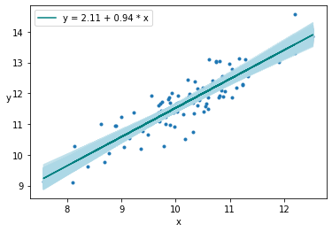
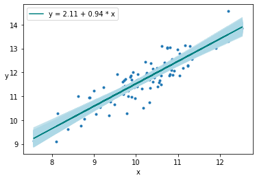

Introduction to PyMC3¶
An example with Linear Regression¶
%matplotlib inline
import arviz as az
import numpy as np
import matplotlib.pyplot as plt
import graphviz
import os
os.environ['OMP_NUM_THREADS'] = '4'
# Initialize random number generator
np.random.seed(123)
# True parameter values
alpha, sigma = 1, 1
beta = [1, 2.5]
# Size of dataset
size = 100
# Predictor variable
X1 = np.linspace(0, 1, size)
X2 = np.linspace(0,.2, size)
# Simulate outcome variable
Y = alpha + beta[0]*X1 + beta[1]*X2 + np.random.randn(size)*sigma
import pymc3 as pm
from pymc3.backends import SQLite
from pymc3 import Model, Normal, HalfNormal
from pymc3 import find_MAP
basic_model = Model()
with basic_model:
# Priors for unknown model parameters
alpha = Normal('alpha', mu=0, sd=10)
beta = Normal('beta', mu=0, sd=10, shape=2)
sigma = HalfNormal('sigma', sd=1)
# Expected value of outcome
mu = alpha + beta[0]*X1 + beta[1]*X2 # Deterministic variable, if we don't have this statement
# PyMC3 will not store mu as a value in the trace
# Likelihood (sampling distribution) of observations
Y_obs = Normal('Y_obs', mu=mu, sd=sigma, observed=Y)
pm.model_to_graphviz(basic_model)
map_estimate = find_MAP(model=basic_model)
map_estimate
from pymc3 import NUTS, sample
from scipy import optimize
with basic_model:
# obtain starting values via MAP
start = find_MAP(fmin=optimize.fmin_powell)
# instantiate sampler
step = NUTS(scaling=start)
# draw 2000 posterior samples
trace = sample(2000, step, start=start)
---------------------------------------------------------------------------
NameError Traceback (most recent call last)
<ipython-input-5-4e0dc0efd2f1> in <module>
2
3 # obtain starting values via MAP
----> 4 start = find_MAP(fmin=optimize.fmin_powell)
5
6 # instantiate sampler
NameError: name 'optimize' is not defined
trace['alpha']
from pymc3 import traceplot
traceplot(trace)
az.summary(trace)
from pymc3 import summary
summary(trace)
Plot the posterior of the beta distribution with the set parameters and a credible interval for the Highest-Posterior Density which is the interval that has the given probability indicated by the HPD.
What is the probability of getting a value given by x, we can’t really calculate this exactly but we can compute this probability within a range x + deltax, x - deltax.
Here, instead of looking at the probability that x = 0.5, we look at the probability that it falls within the range 0.45 and 0.55 called the Region of Practical Equivalence or ROPE
ROPE allows us to make inferences about an event. If we suspect that the dice used at a casino is loaded, we can infer the probability of getting the value 3 from the six outcomes. Ideally, this should be 1/6 = 0.16666, however after computing the posterior our ROPE given by say 0.12 and 0.20 can either overlap with the HPD from the posterior density of the 3 completely, not overlap at all, partially overlap with the HPD. Complete overlap suggests that our computed probability coincides with what we would expect from a fair dice. If it does not overlap, it is not a fair dice and a partial overlap indicates that we cannot be certain that is either fair or unfair.
import numpy as np
from scipy import stats as stats
np.random.seed(1)
az.plot_posterior({'θ':stats.beta.rvs(5, 5, size=20000)}, \
credible_interval=0.75, \
rope =[0.45, 0.55])
Another way to do this is by plotting a reference value on the posterior.
az.plot_posterior({'θ':stats.beta.rvs(5, 5, size=20000)}, \
credible_interval=0.75, \
ref_val=0.5)
Modeling with a Gaussian distribution¶
ADD DETAIL HERE
Gaussians are normally used to approximate a lot of practical data distributions.
We read the chemical shifts data, and plot the density to getan idea of the data distribution. It looks somewhat like a Gaussian so maybe we can start there. We have two parameters that is the mean and the standard deviation. We can estimate a prior for the mean by looking at the density and putting some bounds using a uniform prior. The standard deviation is however chosen to have a mean-centered half-normal prior - half-normal since the standard deviation cannot be negative. We can provide a hyperparameter for this by insoecting the density again. These values decide how well we converge to a solution so good values are essential for good results.
data = np.loadtxt('chemical_shifts.csv')
az.plot_kde(data, rug=True)
plt.yticks([0], alpha=0)
([<matplotlib.axis.YTick at 0x7fbd464d0580>], [Text(0, 0, '')])

import pymc3 as pm
from pymc3.backends import SQLite, Text
model_g = Model()
with model_g:
# Note on scalablility - of your trace information is too big as a result of too many variables or the model being
# too big, you do not want to store this in memory since it can overrun the machine memory. Persisting this
# in a DB will allow you to reload it and inspect it at a later time as well.
# For each run - appends to the DN or file if not deleted
# backend = SQLite('test.sqlite') - Does not work
μ = pm.Uniform('μ', lower=40, upper=70)
σ = pm.HalfNormal('σ', sd=10)
y = pm.Normal('y', mu=μ, sd=σ, observed=data)
trace_g = pm.sample(draws=1000, trace="sqlite")
az.plot_trace(trace_g)
pm.model_to_graphviz(model_g)
Auto-assigning NUTS sampler...
Initializing NUTS using jitter+adapt_diag...
Multiprocess sampling (3 chains in 3 jobs)
NUTS: [σ, μ]
Sampling 3 chains for 1_000 tune and 12_000 draw iterations (3_000 + 36_000 draws total) took 2 seconds.
/opt/conda/lib/python3.8/site-packages/arviz-0.9.0-py3.8.egg/arviz/data/io_pymc3.py:85: FutureWarning: Using `from_pymc3` without the model will be deprecated in a future release. Not using the model will return less accurate and less useful results. Make sure you use the model argument or call from_pymc3 within a model context.
warnings.warn(
from pymc3.backends.sqlite import load
with model_g:
#trace = pm.backends.text.load('./mcmc')
trace = pm.backends.sqlite.load('./mcmc.sqlite')
print(len(trace['μ']))
39000
az.plot_joint(trace_g, kind='kde', fill_last=False)
az.summary(trace_g)
We can draw samples from the inferred posterior distribution to check to see how they line up with the observed values. Below, we draw 100 samples from this posterior. You are returned a dictionary for each of the observed variables in the model.
You can plot the dsitribution of these samples by passing this variable ‘y_pred_g’ as shown below. Setting mean=True in the call to plot_ppc computes the mean of the drawn samples and plots it as well.
Two things can be noted here, the mean of the predicted samples is close to the observed adta but the mean of this mean sample is slightly shifted to the right. Also, the variance of the samples; whether we can say qualitatively that this is acceptable or not depends on the problem. In general, the more representative data points available to us, the lower the variance.
Another thing to note here is that we modeled this using a Gaussian, however we have some outliers that need to be accoutned for which we cannot do well with a Gaussian distribution.
y_pred_g = pm.sample_posterior_predictive(trace_g, 100, model_g)
y_pred_g
data_ppc = az.from_pymc3(trace=trace_g, posterior_predictive=y_pred_g)
ax = az.plot_ppc(data_ppc, figsize=(12, 6), mean=True)
ax[0].legend(fontsize=15)
Robust models with a Student’s t distribution¶
ADD DETAIL HERE
μ corresponds to the mean of the distribution
σ is the scale and corresponds to the standard deviation
ν is the degrees of freedom and takes between 0 and \(\infty\). A value of 1 corresponds to the Cauchy distribution and indicates heavy tails, while infinty corresponds to a Gaussian.
with pm.Model() as model_t:
μ = pm.Uniform('μ', 40, 75) # mean
σ = pm.HalfNormal('σ', sd=10)
ν = pm.Exponential('ν', 1/30)
y = pm.StudentT('y', mu=μ, sd=σ, nu=ν, observed=data)
trace_t = pm.sample(1000)
az.plot_trace(trace_t)
pm.model_to_graphviz(model_t)
Auto-assigning NUTS sampler...
Initializing NUTS using jitter+adapt_diag...
Multiprocess sampling (4 chains in 4 jobs)
NUTS: [ν, σ, μ]
Sampling 4 chains, 0 divergences: 100%|██████████| 6000/6000 [00:04<00:00, 1235.33draws/s]


# Using a student's t distribution we notice that the outliers are captured more
# accurately now and the model fits better
y_ppc_t = pm.sample_posterior_predictive(
trace_t, 100, model_t, random_seed=123)
y_pred_t = az.from_pymc3(trace=trace_t, posterior_predictive=y_ppc_t)
az.plot_ppc(y_pred_t, figsize=(12, 6), mean=True)
ax[0].legend(fontsize=15)
plt.xlim(40, 70)
Hierarchical models¶
Suppose we want to perform an analysis of water quality in a state and we divide this state into districts, there are two options to do this, study each district separately - we lose information especially if there is insufficient data for some districts. But we get a more detailed model per district.
The second option is to combine all the data and estimate the water quality of the state as a whole - More data but we lose granular information about each district.
The hierarchical model combines both of these options, by sharing information between the districts using hyperpriors that are priors over the parameter priors. In other words, instead of setting the parameter priors to a constant value, we draw it from another prior distribution called the hyperprior. This hyperprior is shared among all the districts and as a result sharing information between them.
# We measure the water samples for three districts, and we collect 30 samples
# for each district. We count the number of samples that have contamination
# below the acceptable levels
N_samples = [30, 30, 30] # Total number of samples collected
G_samples = [18, 18, 18] # Number of samples with water contamination
# below accepted levels
# Create an id for each of the 30 + 30 + 30 samples - 0,1,2 to indicate that they
# belong to different groups
group_idx = np.repeat(np.arange(len(N_samples)), N_samples)
data = []
for i in range(0, len(N_samples)):
data.extend(np.repeat([1, 0], [G_samples[i], N_samples[i]-G_samples[i]]))
group_idx
data
The process of generating our samples looks like the following. First we set the parameters for the prior or the hyperpriors.
ADD DETAIL HERE
\( \mu \sim Beta(\alpha_p, \beta_p) \\ k \sim | Normal(0,\sigma_k) | \\ \alpha = \mu * k \\ \beta = (1 - \mu) * k \\ \)
These parameters are then used to define the priors. This is different from using a constant prior value as we saw before.
\( \theta_i \sim Beta(\alpha_i, \beta_i) \\ y_i \sim Bern(\theta_i) \)
def get_hyperprior_model(data, N_samples, group_idx):
with pm.Model() as model_h:
μ = pm.Beta('μ', 1., 1.) # hyperprior
κ = pm.HalfNormal('κ', 10) # hyperprior
θ = pm.Beta('θ', alpha=μ*κ, beta=(1.0-μ)*κ, shape=len(N_samples)) # prior
y = pm.Bernoulli('y', p=θ[group_idx], observed=data)
trace_h = pm.sample(2000)
az.plot_trace(trace_h)
print(az.summary(trace_h))
return(model_h)
model = get_hyperprior_model(data, N_samples, group_idx)
pm.model_to_graphviz(model)
Auto-assigning NUTS sampler...
Initializing NUTS using jitter+adapt_diag...
Multiprocess sampling (4 chains in 4 jobs)
NUTS: [θ, κ, μ]
Sampling 4 chains, 0 divergences: 100%|██████████| 10000/10000 [00:15<00:00, 633.33draws/s]
mean sd hpd_3% hpd_97% mcse_mean mcse_sd ess_mean ess_sd \
μ 0.585 0.096 0.403 0.764 0.001 0.001 6050.0 5900.0
κ 12.223 6.186 1.923 23.344 0.079 0.056 6111.0 6111.0
θ[0] 0.596 0.079 0.445 0.742 0.001 0.001 7004.0 6951.0
θ[1] 0.596 0.079 0.445 0.743 0.001 0.001 7480.0 7480.0
θ[2] 0.596 0.079 0.449 0.741 0.001 0.001 7455.0 7455.0
ess_bulk ess_tail r_hat
μ 6051.0 5340.0 1.0
κ 5478.0 4680.0 1.0
θ[0] 6977.0 5713.0 1.0
θ[1] 7487.0 5956.0 1.0
θ[2] 7453.0 6216.0 1.0

# Shrinkage - information is shared among the subgroups so we move away from extremes, which is great if
# we have outliers in our data subgroups especially when we do not have a lot of data - ADD DETAIL HERE
N_samples = [30, 30, 30] # Total number of samples collected
G_samples = [5, 5, 5] # Number of samples with water contamination
# below accepted levels
# Create an id for each of the 30 + 30 + 30 samples - 0,1,2 to indicate that they
# belong to different groups
group_idx = np.repeat(np.arange(len(N_samples)), N_samples)
data = []
for i in range(0, len(N_samples)):
data.extend(np.repeat([1, 0], [G_samples[i], N_samples[i]-G_samples[i]]))
get_hyperprior_model(data, N_samples, group_idx)
N_samples = [30, 30, 30] # Total number of samples collected
G_samples = [18, 5, 5] # Number of samples with water contamination
# below accepted levels
# Create an id for each of the 30 + 30 + 30 samples - 0,1,2 to indicate that they
# belong to different groups
group_idx = np.repeat(np.arange(len(N_samples)), N_samples)
data = []
for i in range(0, len(N_samples)):
data.extend(np.repeat([1, 0], [G_samples[i], N_samples[i]-G_samples[i]]))
get_hyperprior_model(data, N_samples, group_idx)
Repeat the above with a constant prior instead of hyperpriors
N_samples = [30, 30, 30] # Total number of samples collected
G_samples = [18, 18, 1] # Number of samples with water contamination
# below accepted levels
# Create an id for each of the 30 + 30 + 30 samples - 0,1,2 to indicate that they
# belong to different groups
group_idx = np.repeat(np.arange(len(N_samples)), N_samples)
data = []
for i in range(0, len(N_samples)):
data.extend(np.repeat([1, 0], [G_samples[i], N_samples[i]-G_samples[i]]))
get_hyperprior_model(data, N_samples, group_idx)
Linear Regression¶
np.random.seed(1)
N = 100
alpha_real = 2.5
beta_real = 0.9
eps_real = np.random.normal(0, 0.5, size=N)
x = np.random.normal(10, 1, N)
y_real = alpha_real + beta_real * x
y = y_real + eps_real
_, ax = plt.subplots(1,2, figsize=(8, 4))
ax[0].plot(x, y, 'C0.')
ax[0].set_xlabel('x')
ax[0].set_ylabel('y', rotation=0)
ax[0].plot(x, y_real, 'k')
az.plot_kde(y, ax=ax[1])
ax[1].set_xlabel('y')
plt.tight_layout()
import pymc3 as pm
with pm.Model() as model_g: α = pm.Normal(‘α’, mu=0, sd=10) β = pm.Normal(‘β’, mu=0, sd=1) ϵ = pm.HalfCauchy(‘ϵ’, 5) μ = pm.Deterministic(‘μ’, α + β * x) y_pred = pm.Normal(‘y_pred’, mu=μ, sd=ϵ, observed=y) trace_g = pm.sample(2000, tune=1000)
az.plot_trace(trace_g, var_names=[‘α’, ‘β’, ‘ϵ’]) plt.figure() az.plot_pair(trace_g, var_names=[‘α’, ‘β’], plot_kwargs={‘alpha’: 0.1}) plt.figure() plt.plot(x, y, ‘C0.’) alpha_m = trace_g[‘α’].mean() beta_m = trace_g[‘β’].mean() draws = range(0, len(trace_g[‘α’]), 10) plt.plot(x, trace_g[‘α’][draws] + trace_g[‘β’][draws] * x[:, np.newaxis], c=’gray’, alpha=0.5) plt.plot(x, alpha_m + beta_m * x, c=’k’, label=f’y = {alpha_m:.2f} + {beta_m:.2f} * x’) plt.xlabel(‘x’) plt.ylabel(‘y’, rotation=0) plt.legend()
We sample from the posterior¶
ppc = pm.sample_posterior_predictive(trace_g, samples=2000, model=model_g)
plt.plot(x, y, ‘b.’) plt.plot(x, alpha_m + beta_m * x, c=’k’, label=f’y = {alpha_m:.2f} + {beta_m:.2f} * x’) az.plot_hpd(x, ppc[‘y_pred’], credible_interval=0.5, color=’gray’)
Looking at the plot of \(\alpha\) and \(\beta\), one can notice the high degree of correlation berween these two variables. This results in a paramete posterior space that is diagonally shaped, which is problematic for many samplers such as the Metropolis-Hastings MCMC sampler. One recommended approach to minimize this correlation is to center the independednt variables.
\(\tilde{x} = x - \bar{x}\)
The advantage of this is twofold
The pivot point is the intercept when the slope changes
The parameter posterior space is more circular
In order to center the data
\(y = \alpha - \beta x\) can be reformulated as
\(y = \alpha - \tilde{\beta}(x - \bar{x})\) = \(\alpha + \tilde{\beta} \bar{x} - \tilde{\beta} x\)
\(y = \tilde{\alpha} - \tilde{\beta} x\)
which implies that the original alpha can now be recovered using the formula
\(\alpha = \tilde{\alpha} - \tilde{\beta} \bar{x}\)
You can also standardize the data by mean centering and dividing by the standard deviation
\(\tilde{x} = (x - \bar{x}) / \sigma_x\)
import seaborn as sns
# Load the example dataset for Anscombe's quartet
df = sns.load_dataset("anscombe")
df
# Plot the 4 subgroups in the data
x_0 = df[df.dataset == 'I']['x'].values
y_0 = df[df.dataset == 'I']['y'].values
x_1 = df[df.dataset == 'II']['x'].values
y_1 = df[df.dataset == 'II']['y'].values
x_2 = df[df.dataset == 'III']['x'].values
y_2 = df[df.dataset == 'III']['y'].values
x_3 = df[df.dataset == 'IV']['x'].values
y_3 = df[df.dataset == 'IV']['y'].values
_, ax = plt.subplots(2, 2, figsize=(12,8), sharex=True, sharey=True)
ax = np.ravel(ax)
ax[0].scatter(x_0, y_0)
ax[0].set_title('Group I')
ax[0].set_xlabel('x')
ax[0].set_ylabel('y', rotation=0, labelpad=15)
ax[1].scatter(x_1, y_1)
ax[1].set_title('Group II')
ax[1].set_xlabel('x')
ax[1].set_ylabel('y', rotation=0, labelpad=15)
ax[2].scatter(x_2, y_2)
ax[2].set_title('Group III')
ax[2].set_xlabel('x')
ax[2].set_ylabel('y', rotation=0, labelpad=15)
ax[3].scatter(x_3, y_3)
ax[3].set_title('Group IV')
ax[3].set_xlabel('x')
ax[3].set_ylabel('y', rotation=0, labelpad=15)
# Plot data group 3 and its Kernel density
x_2 = x_2 - x_2.mean()
_, ax = plt.subplots(1, 2, figsize=(10, 5))
beta_c, alpha_c = stats.linregress(x_2, y_2)[:2]
ax[0].plot(x_2, (alpha_c + beta_c * x_2), 'k',
label=f'y ={alpha_c:.2f} + {beta_c:.2f} * x')
ax[0].plot(x_2, y_2, 'C0o')
ax[0].set_xlabel('x')
ax[0].set_ylabel('y', rotation=0)
ax[0].legend(loc=0)
az.plot_kde(y_2, ax=ax[1], rug=True)
ax[1].set_xlabel('y')
ax[1].set_yticks([])
plt.tight_layout()
# Use PyMC3 to model this Linear Regression using a Student's t distribution
with pm.Model() as model_t:
α = pm.Normal('α', mu=y_2.mean(), sd=1)
β = pm.Normal('β', mu=0, sd=1)
ϵ = pm.HalfNormal('ϵ', 5)
ν_ = pm.Exponential('ν_', 1/29)
ν = pm.Deterministic('ν', ν_ + 1)
y_pred = pm.StudentT('y_pred', mu=α + β * x_2,
sd=ϵ, nu=ν, observed=y_2)
trace_t = pm.sample(2000)
alpha_m = trace_t['α'].mean()
beta_m = trace_t['β'].mean()
plt.plot(x_2, alpha_m + beta_m * x_2, c='k', label='robust')
plt.plot(x_2, y_2, '*')
plt.xlabel('x')
plt.ylabel('y', rotation=0)
plt.legend(loc=2)
plt.tight_layout()
pm.model_to_graphviz(model_t)
Hierarchical Linear Regression¶
In this example, we create 8 subgroups with 7 of them having 20 data points and the last one having a single data point. This is to illustrate the importance of imbalanced subgroups with sparse data.
The data for the 8 groups are generated from a normal distribution of mean 10 and a standard deviation of 1. The parameters for the linear model are generated from normal and beta dsitributions.
N = 20
M = 8
idx = np.repeat(range(M-1), N)
idx = np.append(idx, 7)
np.random.seed(314)
alpha_real = np.random.normal(2.5, 0.5, size=M)
beta_real = np.random.beta(6, 1, size=M)
eps_real = np.random.normal(0, 0.5, size=len(idx))
print("Alpha parameters ", alpha_real )
y_m = np.zeros(len(idx))
x_m = np.random.normal(10, 1, len(idx))
y_m = alpha_real[idx] + beta_real[idx] * x_m + eps_real
_, ax = plt.subplots(2, 4, figsize=(12,8), sharex=True, sharey=True)
ax = np.ravel(ax)
j, k = 0, N
for i in range(M):
ax[i].scatter(x_m[j:k], y_m[j:k])
ax[i].set_xlabel(f'x_{i}')
ax[i].set_ylabel(f'y_{i}', rotation=0, labelpad=15)
ax[i].set_xlim(6, 15)
ax[i].set_ylim(7, 17)
j += N
k += N
plt.tight_layout()
Alpha parameters [2.58304272 2.89098224 2.92614255 2.14646452 2.0341714 2.94333044
2.38910517 2.69086179]

We build a non-hierarchical model first¶
Note how the obtained \(\alpha\) and \(\beta\) values vary for each group, particularly the last one which is really off.
# Center the data
x_centered = x_m - x_m.mean()
with pm.Model() as unpooled_model:
# Note the M prior parameters for the M groups
α_tmp = pm.Normal('α_tmp', mu=2, sd=5, shape=M)
β = pm.Normal('β', mu=0, sd=10, shape=M)
ϵ = pm.HalfCauchy('ϵ', 5)
ν = pm.Exponential('ν', 1/30)
y_pred = pm.StudentT('y_pred', mu=α_tmp[idx] + β[idx] * x_centered,
sd=ϵ, nu=ν, observed=y_m)
# Rescale alpha back - after x had been centered the computed alpha is different from the original alpha
α = pm.Deterministic('α', α_tmp - β * x_m.mean())
trace_up = pm.sample(2000)
az.plot_trace(trace_up)
plt.figure()
az.plot_forest(trace_up, var_names=['α', 'β'], combined=True)
az.summary(trace_up)
pm.model_to_graphviz(unpooled_model)
Auto-assigning NUTS sampler...
Initializing NUTS using jitter+adapt_diag...
Multiprocess sampling (4 chains in 4 jobs)
NUTS: [ν, ϵ, β, α_tmp]
Sampling 4 chains, 0 divergences: 100%|██████████| 10000/10000 [00:18<00:00, 548.27draws/s]


<Figure size 432x288 with 0 Axes>

with pm.Model() as hierarchical_model:
# Hyperpriors - we add these instead of setting the prior values to a constant
# Note that there exists only one hyperprior for all M groups, shared hyperprior
α_μ_tmp = pm.Normal('α_μ_tmp', mu=100, sd=1) # try changing these hyperparameters
α_σ_tmp = pm.HalfNormal('α_σ_tmp', 10) # try changing these hyperparameters
β_μ = pm.Normal('β_μ', mu=10, sd=2) # reasonable changes do not have an impact
β_σ = pm.HalfNormal('β_σ', sd=5)
# priors - note that the prior parameters are no longer a constant
α_tmp = pm.Normal('α_tmp', mu=α_μ_tmp, sd=α_σ_tmp, shape=M)
β = pm.Normal('β', mu=β_μ, sd=β_σ, shape=M)
ϵ = pm.HalfCauchy('ϵ', 5)
ν = pm.Exponential('ν', 1/30)
y_pred = pm.StudentT('y_pred',
mu=α_tmp[idx] + β[idx] * x_centered,
sd=ϵ, nu=ν, observed=y_m)
α = pm.Deterministic('α', α_tmp - β * x_m.mean())
α_μ = pm.Deterministic('α_μ', α_μ_tmp - β_μ *
x_m.mean())
α_σ = pm.Deterministic('α_sd', α_σ_tmp - β_μ * x_m.mean())
trace_hm = pm.sample(1000)
az.plot_forest(trace_hm, var_names=['α', 'β'], combined=True)
_, ax = plt.subplots(2, 4, figsize=(10, 5), sharex=True, sharey=True,
constrained_layout=True)
ax = np.ravel(ax)
j, k = 0, N
x_range = np.linspace(x_m.min(), x_m.max(), 10)
for i in range(M):
ax[i].scatter(x_m[j:k], y_m[j:k])
ax[i].set_xlabel(f'x_{i}')
ax[i].set_ylabel(f'y_{i}', labelpad=17, rotation=0)
alpha_m = trace_hm['α'][:, i].mean()
beta_m = trace_hm['β'][:, i].mean()
ax[i].plot(x_range, alpha_m + beta_m * x_range, c='k',
label=f'y = {alpha_m:.2f} + {beta_m:.2f} * x')
plt.xlim(x_m.min()-1, x_m.max()+1)
plt.ylim(y_m.min()-1, y_m.max()+1)
j += N
k += N
pm.model_to_graphviz(hierarchical_model)
Auto-assigning NUTS sampler...
Initializing NUTS using jitter+adapt_diag...
Multiprocess sampling (4 chains in 4 jobs)
NUTS: [ν, ϵ, β, α_tmp, β_σ, β_μ, α_σ_tmp, α_μ_tmp]
Sampling 4 chains, 42 divergences: 100%|██████████| 6000/6000 [00:28<00:00, 211.74draws/s]
There were 3 divergences after tuning. Increase `target_accept` or reparameterize.
The acceptance probability does not match the target. It is 0.9726394132105417, but should be close to 0.8. Try to increase the number of tuning steps.
There were 18 divergences after tuning. Increase `target_accept` or reparameterize.
The acceptance probability does not match the target. It is 0.9328867621937116, but should be close to 0.8. Try to increase the number of tuning steps.
There were 12 divergences after tuning. Increase `target_accept` or reparameterize.
There were 9 divergences after tuning. Increase `target_accept` or reparameterize.
The acceptance probability does not match the target. It is 0.884780567793289, but should be close to 0.8. Try to increase the number of tuning steps.
The number of effective samples is smaller than 25% for some parameters.


Polynomial Regression for nonlinear data¶
x_1_centered = x_1 - x_1.mean()
plt.scatter(x_1_centered, y_1)
plt.xlabel('x')
plt.ylabel('y', rotation=0)
plt.figure()
x_0_centered = x_0 - x_0.mean()
plt.scatter(x_0_centered, y_0)
plt.xlabel('x')
plt.ylabel('y', rotation=0)
with pm.Model() as model_poly:
α = pm.Normal('α', mu=y_1.mean(), sd=1)
β1 = pm.Normal('β1', mu=0, sd=1)
β2 = pm.Normal('β2', mu=0, sd=1)
ϵ = pm.HalfCauchy('ϵ', 5)
mu = α + β1 * x_1_centered + β2 * x_1_centered**2
y_pred = pm.Normal('y_pred', mu=mu, sd=ϵ, observed=y_1)
trace = pm.sample(2000)
x_p = np.linspace(-6, 6)
y_p = trace['α'].mean() + trace['β1'].mean() * x_p + trace['β2'].mean() * x_p**2
plt.scatter(x_1_centered, y_1)
plt.xlabel('x')
plt.ylabel('y', rotation=0)
plt.plot(x_p, y_p, c='C1')
with pm.Model() as model_poly:
α = pm.Normal('α', mu=y_0.mean(), sd=1)
β1 = pm.Normal('β1', mu=0, sd=1)
β2 = pm.Normal('β2', mu=0, sd=1)
ϵ = pm.HalfCauchy('ϵ', 5)
mu = α + β1 * x_0_centered + β2 * x_0_centered**2
y_pred = pm.Normal('y_pred', mu=mu, sd=ϵ, observed=y_0)
trace = pm.sample(2000)
x_p = np.linspace(-6, 6)
y_p = trace['α'].mean() + trace['β1'].mean() * x_p + trace['β2'].mean() * x_p**2
plt.scatter(x_0_centered, y_0)
plt.xlabel('x')
plt.ylabel('y', rotation=0)
plt.plot(x_p, y_p, c='C1')
Multiple Linear Regression¶
np.random.seed(314)
# N is the total number of observations
N = 100
# m is 2, the number of independent variables
alpha_real = 2.5
beta_real = [0.9, 1.5]
eps_real = np.random.normal(0, 0.5, size=N)
# X is # n x m
X = np.array([np.random.normal(i, j, N) for i, j in zip([10, 2], [1, 1.5])]).T
X_mean = X.mean(axis=0, keepdims=True)
X_centered = X - X_mean
y = alpha_real + np.dot(X, beta_real) + eps_real
def scatter_plot(x, y):
plt.figure(figsize=(10, 10))
for idx, x_i in enumerate(x.T):
plt.subplot(2, 2, idx+1)
plt.scatter(x_i, y)
plt.xlabel(f'x_{idx+1}')
plt.ylabel(f'y', rotation=0)
plt.subplot(2, 2, idx+2)
plt.scatter(x[:, 0], x[:, 1])
plt.xlabel(f'x_{idx}')
plt.ylabel(f'x_{idx+1}', rotation=0)
scatter_plot(X_centered, y)
with pm.Model() as model_mlr:
α_tmp = pm.Normal('α_tmp', mu=0, sd=10)
β = pm.Normal('β', mu=0, sd=1, shape=2)
ϵ = pm.HalfCauchy('ϵ', 5)
μ = α_tmp + pm.math.dot(X_centered, β)
α = pm.Deterministic('α', α_tmp - pm.math.dot(X_mean, β))
y_pred = pm.Normal('y_pred', mu=μ, sd=ϵ, observed=y)
trace = pm.sample(2000)
az.summary(trace)
pm.model_to_graphviz(model_mlr)
Logistic Regression¶
While everything we have seen so far involved regression, the same ideas can be applied to a classification task as well. We use the logistic regression model to perform this classification here. The name ‘regression’ is due to the fact that the model outputs class probabilities as numbers which is then converted into classes using a decision boundary. There are many ways to select an appropriate decision boundary, many of which is covered in the section for model selection.
Inverse Link function¶
At this point it is a good idea to bring up the concept of a inverse link function, which takes the form
\(\theta = f(\alpha + \beta x)\)
Here ‘f’ is called the inverse link function, the term inverse refers to the fact that the function is applied to the right hand side of the equation. In a linear regression, this inverse link function is the identity function. In the case of a lienar regression model, the value ‘y’ at any point ‘x’ is modeled as the mean of a Gaussian distribution centered at the point (x,y). The error as a result of the true ‘y’ and the estimated ‘y’ as modeled with the standard deviation of this Gaussian at that point (x,y). Now think about the scenario where this is not appropriately modeled using a Gaussian. A classification problem is a perfect example of such a scenario where the discrete classes are not modeled well as a Gaussian and hence we can’t use a Gaussian to model the mean of those classes. As a result, we would like to convert the output of \(\alpha = \beta x\) to some other range of values that are more appropriate to the distribution being modeled, which is what the link function intends to do.
Logistic function¶
The logistic function is defined as the function
\(logistic(x) = \dfrac{1}{1 + \exp{(-x)}}\)
This is also called the sigmoid function and it restricts value to the range [0,1]
x = np.linspace(-5,5)
plt.plot(x, 1 / (1 + np.exp(-x)))
plt.xlabel('x')
plt.ylabel('logistic(x)')
Example using the Iris data¶
The simplest example using a logistic regression model is one that can be used to identify two classes. If you are given a set of independent variables that are features which correspond to an output dependent variable that is a class, you can build a model to learn the relationship between the features and the output classes. This is done with the help of the logistic function which acts as the inverse link function to relate the features to the output class.
\(\theta = logistic(\alpha + \beta x)\)
\(y = Bern(\theta)\)
Here the binary class probability is drawn from a Bernoulli distribution, but the mean parameter \(\theta\) is now given by the regression equation \(logistic(\alpha + \beta x)\). In regular linear regression, this parameter was drawn from a Gaussian distribution. Also, in the case of the coin-flip example where we use a Bernoulli distribution, the parameter \(\theta\) was drawn from a Beta prior distribution however here we have output classes associated with every observation and hence can be posed as a regression problem.
We load the iris data from scikit learn and plot the distribution of the three classes for two of the features. We also perform a pairplot to visualize the correlation of each feature with every other feature. The diagonal of this plot shows the distribution of the three classes for that feature.
import pymc3 as pm
import sklearn
import numpy as np
import graphviz
import pandas as pd
from matplotlib import pyplot as plt
import seaborn
from sklearn import datasets
df = datasets.load_iris()
iris_data = pd.DataFrame(df['data'], columns=df['feature_names'])
iris_data['target'] = df['target']
seaborn.stripplot(x='target', y='sepal length (cm)', data=iris_data, jitter=False)
plt.figure()
seaborn.stripplot(x='target', y='petal length (cm)', data=iris_data, jitter=False)
plt.figure()
seaborn.pairplot(iris_data, hue='target', diag_kind='kde')
plt.figure()
corr = iris_data.query("target == (0,1)").loc[:, iris_data.columns != 'target'].corr()
mask = np.tri(*corr.shape).T
seaborn.heatmap(corr.abs(), mask=mask, annot=True)
plt.show()
 

<Figure size 432x288 with 0 Axes>


You would notice that some of the variables have a high degree of correlation from the correlation plot. One approach is to eliminate one of the correlated variables. The second option is to mean-center and use a weakly-informative prior such as a Students t-distribution for all variables that are not binary. The scale parameter can be adjusted for the range of expected values for these variables and the normality parameter is recommended to be between 3 and 7. (Source: Andrew Gelman and the Stan team)
df['target_names']
array(['setosa', 'versicolor', 'virginica'], dtype='<U10')
# Select the first two classes for a binary classification problem
df = iris_data.query("target == (0,1)")
y_0 = df.target
x_n = 'sepal length (cm)'
x_0 = df[x_n].values
x_c = x_0 - x_0.mean()
import pymc3 as pm
import arviz as az
with pm.Model() as model_0:
α = pm.Normal('α', mu=0, sd=10)
β = pm.Normal('β', mu=0, sd=10)
μ = α + pm.math.dot(x_c, β)
θ = pm.Deterministic('θ', pm.math.sigmoid(μ))
bd = pm.Deterministic('bd', -α/β)
yl = pm.Bernoulli('yl', p=θ, observed=y_0)
trace_0 = pm.sample(1000)
pm.model_to_graphviz(model_0)
Auto-assigning NUTS sampler...
Initializing NUTS using jitter+adapt_diag...
Multiprocess sampling (4 chains in 4 jobs)
NUTS: [β, α]
Could not pickle model, sampling singlethreaded.
Sequential sampling (4 chains in 1 job)
NUTS: [β, α]
Sampling 4 chains for 1_000 tune and 1_000 draw iterations (4_000 + 4_000 draws total) took 4 seconds.

az.summary(trace_0, var_names=["α","β","bd"])
/Users/srijith.rajamohan/opt/anaconda3/envs/pymc3/lib/python3.8/site-packages/arviz/data/io_pymc3.py:85: FutureWarning: Using `from_pymc3` without the model will be deprecated in a future release. Not using the model will return less accurate and less useful results. Make sure you use the model argument or call from_pymc3 within a model context.
warnings.warn(
| mean | sd | hdi_3% | hdi_97% | mcse_mean | mcse_sd | ess_mean | ess_sd | ess_bulk | ess_tail | r_hat | |
|---|---|---|---|---|---|---|---|---|---|---|---|
| α | 0.308 | 0.341 | -0.273 | 1.006 | 0.006 | 0.005 | 2840.0 | 2188.0 | 2872.0 | 2436.0 | 1.0 |
| β | 5.361 | 1.046 | 3.572 | 7.418 | 0.020 | 0.015 | 2704.0 | 2560.0 | 2784.0 | 2309.0 | 1.0 |
| bd | -0.056 | 0.062 | -0.176 | 0.057 | 0.001 | 0.001 | 2879.0 | 2454.0 | 2878.0 | 2696.0 | 1.0 |
theta = trace_0['θ'].mean(axis=0)
idx = np.argsort(x_c)
plt.plot(x_c[idx], theta[idx], color='C2', lw=3)
plt.vlines(trace_0['bd'].mean(), 0, 1, color='k')
bd_hpd = az.hpd(trace_0['bd'])
plt.fill_betweenx([0, 1], bd_hpd[0], bd_hpd[1], color='k', alpha=0.5)
plt.scatter(x_c, np.random.normal(y_0, 0.02),
marker='.', color=[f'C{x}' for x in y_0])
az.plot_hpd(x_c, trace_0['θ'], color='C2')
plt.xlabel(x_n)
plt.ylabel('θ', rotation=0)
# use original scale for xticks
locs, _ = plt.xticks()
plt.xticks(locs, np.round(locs + x_0.mean(), 1))
/Users/srijith.rajamohan/opt/anaconda3/envs/pymc3/lib/python3.8/site-packages/arviz/stats/stats.py:338: UserWarning: hpd will be deprecated Please replace hdi
warnings.warn(("hpd will be deprecated " "Please replace hdi"),)
/Users/srijith.rajamohan/opt/anaconda3/envs/pymc3/lib/python3.8/site-packages/arviz/stats/stats.py:483: FutureWarning: hdi currently interprets 2d data as (draw, shape) but this will change in a future release to (chain, draw) for coherence with other functions
warnings.warn(
([<matplotlib.axis.XTick at 0x7ff4d740b220>,
<matplotlib.axis.XTick at 0x7ff4d740bd30>,
<matplotlib.axis.XTick at 0x7ff4d72e0e50>,
<matplotlib.axis.XTick at 0x7ff4d82a5850>,
<matplotlib.axis.XTick at 0x7ff4d82a5d60>,
<matplotlib.axis.XTick at 0x7ff4d82aa2b0>,
<matplotlib.axis.XTick at 0x7ff4d82aa7c0>,
<matplotlib.axis.XTick at 0x7ff4d82aacd0>],
[Text(-1.5, 0, '4.0'),
Text(-1.0, 0, '4.5'),
Text(-0.5, 0, '5.0'),
Text(0.0, 0, '5.5'),
Text(0.5, 0, '6.0'),
Text(1.0, 0, '6.5'),
Text(1.5, 0, '7.0'),
Text(2.0, 0, '7.5')])


In this case, the decision boundary is defined to be the value of ‘x’ when ‘y’ = 0.5. This turns out to be \(-\alpha / \beta\). However, this value was chosen under the assumption that the midpoint of the class values are a good candidate, but this does not have to be the case.
Multiple Logistic Regression¶
The above example with a single feature can be expanded to take multiple features or independent variables.
# Select the first two classes for a binary classification problem
df = iris_data.query("target == (0,1)")
y_0 = df.target
x_n = ['sepal length (cm)', 'sepal width (cm)']
# Center the data by subtracting the mean from both columns
df_c = df - df.mean()
x_c = df_c[x_n].values
print(x_c)
[[-3.710e-01 4.010e-01]
[-5.710e-01 -9.900e-02]
[-7.710e-01 1.010e-01]
[-8.710e-01 1.000e-03]
[-4.710e-01 5.010e-01]
[-7.100e-02 8.010e-01]
[-8.710e-01 3.010e-01]
[-4.710e-01 3.010e-01]
[-1.071e+00 -1.990e-01]
[-5.710e-01 1.000e-03]
[-7.100e-02 6.010e-01]
[-6.710e-01 3.010e-01]
[-6.710e-01 -9.900e-02]
[-1.171e+00 -9.900e-02]
[ 3.290e-01 9.010e-01]
[ 2.290e-01 1.301e+00]
[-7.100e-02 8.010e-01]
[-3.710e-01 4.010e-01]
[ 2.290e-01 7.010e-01]
[-3.710e-01 7.010e-01]
[-7.100e-02 3.010e-01]
[-3.710e-01 6.010e-01]
[-8.710e-01 5.010e-01]
[-3.710e-01 2.010e-01]
[-6.710e-01 3.010e-01]
[-4.710e-01 -9.900e-02]
[-4.710e-01 3.010e-01]
[-2.710e-01 4.010e-01]
[-2.710e-01 3.010e-01]
[-7.710e-01 1.010e-01]
[-6.710e-01 1.000e-03]
[-7.100e-02 3.010e-01]
[-2.710e-01 1.001e+00]
[ 2.900e-02 1.101e+00]
[-5.710e-01 1.000e-03]
[-4.710e-01 1.010e-01]
[ 2.900e-02 4.010e-01]
[-5.710e-01 5.010e-01]
[-1.071e+00 -9.900e-02]
[-3.710e-01 3.010e-01]
[-4.710e-01 4.010e-01]
[-9.710e-01 -7.990e-01]
[-1.071e+00 1.010e-01]
[-4.710e-01 4.010e-01]
[-3.710e-01 7.010e-01]
[-6.710e-01 -9.900e-02]
[-3.710e-01 7.010e-01]
[-8.710e-01 1.010e-01]
[-1.710e-01 6.010e-01]
[-4.710e-01 2.010e-01]
[ 1.529e+00 1.010e-01]
[ 9.290e-01 1.010e-01]
[ 1.429e+00 1.000e-03]
[ 2.900e-02 -7.990e-01]
[ 1.029e+00 -2.990e-01]
[ 2.290e-01 -2.990e-01]
[ 8.290e-01 2.010e-01]
[-5.710e-01 -6.990e-01]
[ 1.129e+00 -1.990e-01]
[-2.710e-01 -3.990e-01]
[-4.710e-01 -1.099e+00]
[ 4.290e-01 -9.900e-02]
[ 5.290e-01 -8.990e-01]
[ 6.290e-01 -1.990e-01]
[ 1.290e-01 -1.990e-01]
[ 1.229e+00 1.000e-03]
[ 1.290e-01 -9.900e-02]
[ 3.290e-01 -3.990e-01]
[ 7.290e-01 -8.990e-01]
[ 1.290e-01 -5.990e-01]
[ 4.290e-01 1.010e-01]
[ 6.290e-01 -2.990e-01]
[ 8.290e-01 -5.990e-01]
[ 6.290e-01 -2.990e-01]
[ 9.290e-01 -1.990e-01]
[ 1.129e+00 -9.900e-02]
[ 1.329e+00 -2.990e-01]
[ 1.229e+00 -9.900e-02]
[ 5.290e-01 -1.990e-01]
[ 2.290e-01 -4.990e-01]
[ 2.900e-02 -6.990e-01]
[ 2.900e-02 -6.990e-01]
[ 3.290e-01 -3.990e-01]
[ 5.290e-01 -3.990e-01]
[-7.100e-02 -9.900e-02]
[ 5.290e-01 3.010e-01]
[ 1.229e+00 1.000e-03]
[ 8.290e-01 -7.990e-01]
[ 1.290e-01 -9.900e-02]
[ 2.900e-02 -5.990e-01]
[ 2.900e-02 -4.990e-01]
[ 6.290e-01 -9.900e-02]
[ 3.290e-01 -4.990e-01]
[-4.710e-01 -7.990e-01]
[ 1.290e-01 -3.990e-01]
[ 2.290e-01 -9.900e-02]
[ 2.290e-01 -1.990e-01]
[ 7.290e-01 -1.990e-01]
[-3.710e-01 -5.990e-01]
[ 2.290e-01 -2.990e-01]]
As we saw before, the equation for multiple logistic regression relating the \(\theta\) parameter to the features can be written as
\(\theta = logistic(\alpha + \beta_1 x_1 + \beta_2 x_2)\)
\(y = Bern(\theta)\)
This gives us a decision boundary, assuming y = 0.5, of
\(x = -\dfrac{\alpha}{\beta_2} - \dfrac{\beta_1}{\beta_2} x_1\)
Unlike the previous equation, this one represents a line for the variables x1 and x2 which separates the two-dimensional space occupied by x1 and x2. For higher dimensions, this boundary decision will be a hyperplane of dimension ‘n-1’ for a feature space of dimension ‘n’.
with pm.Model() as model_1:
α = pm.Normal('α', mu=0, sd=10)
β = pm.Normal('β', mu=0, sd=2, shape=len(x_n))
μ = α + pm.math.dot(x_c, β)
θ = pm.Deterministic('θ', 1 / (1 + pm.math.exp(-μ)))
bd = pm.Deterministic('bd', -α/β[1] - β[0]/β[1] * x_c[:,0])
yl = pm.Bernoulli('yl', p=θ, observed=y_0)
trace_0 = pm.sample(2000)
Auto-assigning NUTS sampler...
Initializing NUTS using jitter+adapt_diag...
Multiprocess sampling (4 chains in 4 jobs)
NUTS: [β, α]
Could not pickle model, sampling singlethreaded.
Sequential sampling (4 chains in 1 job)
NUTS: [β, α]
Sampling 4 chains for 1_000 tune and 2_000 draw iterations (4_000 + 8_000 draws total) took 7 seconds.
# We plot the HPD on the centered data, we have not scaled it back to the original range
idx = np.argsort(x_c[:,0])
bd = trace_0['bd'].mean(0)[idx]
plt.scatter(x_c[:,0], x_c[:,1], c=[f'C{x}' for x in y_0])
plt.plot(x_c[:,0][idx], bd, color='k');
az.plot_hpd(x_c[:,0], trace_0['bd'], color='k')
plt.xlabel(x_n[0])
plt.ylabel(x_n[1])
/Users/srijith.rajamohan/opt/anaconda3/envs/pymc3/lib/python3.8/site-packages/arviz/stats/stats.py:483: FutureWarning: hdi currently interprets 2d data as (draw, shape) but this will change in a future release to (chain, draw) for coherence with other functions
warnings.warn(
Text(0, 0.5, 'sepal width (cm)')


pm.model_to_graphviz(model_1)

Multiclass Classification¶
For a multiclass problem, one uses the softmax function instead of the sigmoid function. The sigmoid function is a special case of the softmax for a two-class classification problem. The softmax can be written as
\( softmax(x_i) = \dfrac{\exp(x_i)}{\sum_k \exp(x_k)} \)
We also used a Bernoulli distribution for our \(\theta\) parameter, however now we have a categorical distribution.
\(\theta = logistic(\alpha + \beta x)\)
\(y = Categorical(\theta)\)
Logistic regression example for a multiclass problem¶
We reuse the previous example, however we are going to use all the three classes in the data here along with all the features for maximum separability. The data is also standardized instead of just mean-centered here.
y_s = iris_data.target
x_n = iris_data.columns[:-1]
x_s = iris_data[x_n]
x_s = (x_s - x_s.mean()) / x_s.std()
x_s = x_s.values
import theano as tt
#tt.config.gcc.cxxflags = "-Wno-c++11-narrowing"
with pm.Model() as model_mclass:
alpha = pm.Normal('alpha', mu=0, sd=5, shape=3)
beta = pm.Normal('beta', mu=0, sd=5, shape=(4,3))
μ = pm.Deterministic('μ', alpha + pm.math.dot(x_s, beta))
θ = tt.tensor.nnet.softmax(μ)
yl = pm.Categorical('yl', p=θ, observed=y_s)
trace_s = pm.sample(2000)
data_pred = trace_s['μ'].mean(0)
y_pred = [np.exp(point)/np.sum(np.exp(point), axis=0) for point in data_pred]
az.plot_trace(trace_s, var_names=['alpha'])
f'{np.sum(y_s == np.argmax(y_pred, axis=1)) / len(y_s):.2f}'
Auto-assigning NUTS sampler...
Initializing NUTS using jitter+adapt_diag...
Multiprocess sampling (4 chains in 4 jobs)
NUTS: [beta, alpha]
Could not pickle model, sampling singlethreaded.
Sequential sampling (4 chains in 1 job)
NUTS: [beta, alpha]
Sampling 4 chains for 1_000 tune and 2_000 draw iterations (4_000 + 8_000 draws total) took 74 seconds.
There were 5 divergences after tuning. Increase `target_accept` or reparameterize.
There were 9 divergences after tuning. Increase `target_accept` or reparameterize.
There were 34 divergences after tuning. Increase `target_accept` or reparameterize.
There were 36 divergences after tuning. Increase `target_accept` or reparameterize.
/Users/srijith.rajamohan/opt/anaconda3/envs/pymc3/lib/python3.8/site-packages/arviz/data/io_pymc3.py:85: FutureWarning: Using `from_pymc3` without the model will be deprecated in a future release. Not using the model will return less accurate and less useful results. Make sure you use the model argument or call from_pymc3 within a model context.
warnings.warn(
'0.98'

# All diagnostics in PyMC3 is now in Arviz starting with version 3.9 of PyMC3
# Summary is a good place to start
az.summary(trace_s)
/Users/srijith.rajamohan/opt/anaconda3/envs/pymc3/lib/python3.8/site-packages/arviz/data/io_pymc3.py:85: FutureWarning: Using `from_pymc3` without the model will be deprecated in a future release. Not using the model will return less accurate and less useful results. Make sure you use the model argument or call from_pymc3 within a model context.
warnings.warn(
| mean | sd | hdi_3% | hdi_97% | mcse_mean | mcse_sd | ess_mean | ess_sd | ess_bulk | ess_tail | r_hat | |
|---|---|---|---|---|---|---|---|---|---|---|---|
| alpha[0] | -1.023 | 3.661 | -7.879 | 5.695 | 0.063 | 0.045 | 3390.0 | 3243.0 | 3406.0 | 3786.0 | 1.0 |
| alpha[1] | 5.890 | 3.185 | -0.049 | 11.860 | 0.058 | 0.041 | 3054.0 | 3054.0 | 3052.0 | 3672.0 | 1.0 |
| alpha[2] | -4.706 | 3.409 | -10.959 | 1.815 | 0.061 | 0.043 | 3163.0 | 3163.0 | 3170.0 | 3731.0 | 1.0 |
| beta[0,0] | -2.585 | 4.190 | -10.533 | 5.147 | 0.064 | 0.050 | 4298.0 | 3532.0 | 4306.0 | 4274.0 | 1.0 |
| beta[0,1] | 1.959 | 3.337 | -4.291 | 8.046 | 0.058 | 0.041 | 3315.0 | 3258.0 | 3315.0 | 4176.0 | 1.0 |
| ... | ... | ... | ... | ... | ... | ... | ... | ... | ... | ... | ... |
| μ[148,1] | 3.212 | 6.923 | -8.921 | 17.009 | 0.124 | 0.087 | 3139.0 | 3139.0 | 3141.0 | 3415.0 | 1.0 |
| μ[148,2] | 10.697 | 7.001 | -2.329 | 23.830 | 0.123 | 0.087 | 3234.0 | 3234.0 | 3236.0 | 3475.0 | 1.0 |
| μ[149,0] | -11.004 | 5.560 | -21.608 | -1.021 | 0.096 | 0.068 | 3384.0 | 3339.0 | 3392.0 | 4245.0 | 1.0 |
| μ[149,1] | 4.254 | 4.752 | -4.925 | 12.993 | 0.086 | 0.061 | 3083.0 | 3083.0 | 3087.0 | 3690.0 | 1.0 |
| μ[149,2] | 6.855 | 4.759 | -2.176 | 15.787 | 0.085 | 0.060 | 3108.0 | 3108.0 | 3106.0 | 3807.0 | 1.0 |
465 rows × 11 columns
# You can call rhat or the
az.rhat(trace_s)
/Users/srijith.rajamohan/opt/anaconda3/envs/pymc3/lib/python3.8/site-packages/arviz/data/io_pymc3.py:85: FutureWarning: Using `from_pymc3` without the model will be deprecated in a future release. Not using the model will return less accurate and less useful results. Make sure you use the model argument or call from_pymc3 within a model context.
warnings.warn(
<xarray.Dataset>
Dimensions: (alpha_dim_0: 3, beta_dim_0: 4, beta_dim_1: 3, μ_dim_0: 150, μ_dim_1: 3)
Coordinates:
* alpha_dim_0 (alpha_dim_0) int64 0 1 2
* beta_dim_0 (beta_dim_0) int64 0 1 2 3
* beta_dim_1 (beta_dim_1) int64 0 1 2
* μ_dim_0 (μ_dim_0) int64 0 1 2 3 4 5 6 7 ... 143 144 145 146 147 148 149
* μ_dim_1 (μ_dim_1) int64 0 1 2
Data variables:
alpha (alpha_dim_0) float64 1.001 1.003 1.002
beta (beta_dim_0, beta_dim_1) float64 1.001 1.001 ... 1.001 1.001
μ (μ_dim_0, μ_dim_1) float64 1.001 1.001 1.001 ... 1.0 1.001- alpha_dim_0: 3
- beta_dim_0: 4
- beta_dim_1: 3
- μ_dim_0: 150
- μ_dim_1: 3
- alpha_dim_0(alpha_dim_0)int640 1 2
array([0, 1, 2])
- beta_dim_0(beta_dim_0)int640 1 2 3
array([0, 1, 2, 3])
- beta_dim_1(beta_dim_1)int640 1 2
array([0, 1, 2])
- μ_dim_0(μ_dim_0)int640 1 2 3 4 5 ... 145 146 147 148 149
array([ 0, 1, 2, 3, 4, 5, 6, 7, 8, 9, 10, 11, 12, 13, 14, 15, 16, 17, 18, 19, 20, 21, 22, 23, 24, 25, 26, 27, 28, 29, 30, 31, 32, 33, 34, 35, 36, 37, 38, 39, 40, 41, 42, 43, 44, 45, 46, 47, 48, 49, 50, 51, 52, 53, 54, 55, 56, 57, 58, 59, 60, 61, 62, 63, 64, 65, 66, 67, 68, 69, 70, 71, 72, 73, 74, 75, 76, 77, 78, 79, 80, 81, 82, 83, 84, 85, 86, 87, 88, 89, 90, 91, 92, 93, 94, 95, 96, 97, 98, 99, 100, 101, 102, 103, 104, 105, 106, 107, 108, 109, 110, 111, 112, 113, 114, 115, 116, 117, 118, 119, 120, 121, 122, 123, 124, 125, 126, 127, 128, 129, 130, 131, 132, 133, 134, 135, 136, 137, 138, 139, 140, 141, 142, 143, 144, 145, 146, 147, 148, 149]) - μ_dim_1(μ_dim_1)int640 1 2
array([0, 1, 2])
- alpha(alpha_dim_0)float641.001 1.003 1.002
array([1.00134398, 1.00271425, 1.00246509])
- beta(beta_dim_0, beta_dim_1)float641.001 1.001 1.002 ... 1.001 1.001
array([[1.00116091, 1.00127337, 1.00168056], [1.00212876, 1.00128523, 1.00176788], [1.00098591, 1.00103688, 1.00129394], [1.00131732, 1.00087119, 1.00064987]]) - μ(μ_dim_0, μ_dim_1)float641.001 1.001 1.001 ... 1.0 1.001
array([[1.00057641, 1.00081532, 1.00094447], [1.00115196, 1.00094393, 1.00104752], [1.0010649 , 1.00096949, 1.0012116 ], [1.0012704 , 1.00105388, 1.0012845 ], [1.00052307, 1.00070998, 1.00101121], [1.0005994 , 1.00090445, 1.00082594], [1.00069827, 1.00100515, 1.00136024], [1.00084701, 1.00075254, 1.00102975], [1.00102028, 1.00116917, 1.0013453 ], [1.00133509, 1.00087915, 1.00102236], [1.00066926, 1.00093146, 1.00072215], [1.00081356, 1.00086286, 1.0011779 ], [1.00131636, 1.00096489, 1.00107494], [1.00124397, 1.00116478, 1.00135978], [1.00050268, 1.00110356, 1.00052323], [1.00090369, 1.00098001, 1.00067451], [1.00077436, 1.00105386, 1.00080386], [1.00068275, 1.00095141, 1.00099607], [1.00070298, 1.00082441, 1.00058593], [1.00048427, 1.0007606 , 1.00098124], ... [1.00067093, 1.00085672, 1.0008529 ], [1.00087999, 1.00121558, 1.0010196 ], [1.00057533, 1.0004511 , 1.0003651 ], [1.00008245, 1.00046524, 1.00059376], [1.0000111 , 1.00096022, 1.00051052], [1.00090683, 1.00091376, 1.0009678 ], [1.00107221, 1.00108505, 1.00078812], [1.00092544, 1.00067349, 1.00042754], [1.00077827, 1.00040055, 1.00048929], [1.00131539, 1.00076447, 1.00069746], [1.0010406 , 1.00076114, 1.00064426], [1.0013128 , 1.00068845, 1.00067414], [1.00045044, 1.00044479, 1.00087911], [1.0010995 , 1.00089891, 1.0007167 ], [1.00099763, 1.00094233, 1.00074563], [1.00106828, 1.00060908, 1.00056312], [1.00024912, 1.00081684, 1.00090401], [1.00101988, 1.00053583, 1.00044355], [1.00105839, 1.00108584, 1.00081047], [1.00060579, 1.00046607, 1.00077083]])
trace_s.stat_names
{'depth',
'diverging',
'energy',
'energy_error',
'max_energy_error',
'mean_tree_accept',
'model_logp',
'perf_counter_diff',
'perf_counter_start',
'process_time_diff',
'step_size',
'step_size_bar',
'tree_size',
'tune'}
import seaborn as sns
print("Length of trace_s",len(trace_s.energy), max(trace_s.energy))
print("Depth of the tree used to generate the sample ",trace_s.depth)
print("Energy at the point where the sample was generated ",trace_s.energy)
# This is difference in energy beween the start and the end of the trajectory, should ideally be zero
print("Energy error between start and end of the trajectory ",trace_s.energy_error)
# maximum difference in energy along the whole trajectory of sampling, this can help identify divergences
print("Energy error maximum over the entire trajectory ",trace_s.max_energy_error)
print("Step size ",trace_s.step_size)
print("Best step size determined from tuning ",trace_s.step_size_bar)
Length of trace_s 8000 84.08494677302417
Depth of the tree used to generate the sample [5 6 5 ... 6 6 5]
Energy at the point where the sample was generated [65.72660855 61.74813467 61.54848582 ... 68.76994503 68.56852543
64.39794338]
Energy at the point where the sample was generated [-0.01551336 -0.02087466 0.41298727 ... -0.15929246 2.39400741
-2.59595018]
Energy at the point where the sample was generated [ 9.12192842 1.01714095 1.18666497 ... -0.47604175 126.23403766
-2.59595018]
Energy at the point where the sample was generated [0.09682888 0.09682888 0.09682888 ... 0.09597601 0.09597601 0.09597601]
Energy at the point where the sample was generated [0.11441112 0.11441112 0.11441112 ... 0.1140062 0.1140062 0.1140062 ]
sns.distplot(trace_s.energy)
<AxesSubplot:>

# Seaborn uses the interquartile range to draw the box plot whiskers given by Q1 - 1.5IQR, Q3 + 1.5IQR
sns.boxplot(trace_s.max_energy_error)
<AxesSubplot:>

sns.lineplot(np.arange(0,len(trace_s.step_size_bar)), trace_s.step_size_bar)
<AxesSubplot:>

# The energy and the energy transition should be as close as possible
# if the energy transition is smaller or narrower than the marginal energy, it implies that the sampler did not
# sample the space appropriately and that the results obtained are probably biased
pm.energyplot(trace_s)
/Users/srijith.rajamohan/opt/anaconda3/envs/pymc3/lib/python3.8/site-packages/arviz/data/io_pymc3.py:85: FutureWarning: Using `from_pymc3` without the model will be deprecated in a future release. Not using the model will return less accurate and less useful results. Make sure you use the model argument or call from_pymc3 within a model context.
warnings.warn(
<AxesSubplot:>

# A score of less than 2 indicates good convergence
# Computes the z score at each interval and returns and array of (interval start location, z score)
pm.geweke(trace_s['alpha'])
array([[ 0.00000000e+00, 6.81670105e-03],
[ 2.10000000e+02, 6.58733966e-03],
[ 4.21000000e+02, 1.17887921e-03],
[ 6.31000000e+02, 6.05033956e-03],
[ 8.42000000e+02, -9.75412595e-03],
[ 1.05200000e+03, -2.41659887e-02],
[ 1.26300000e+03, -2.27070129e-02],
[ 1.47300000e+03, -3.54427442e-02],
[ 1.68400000e+03, 4.54991213e-03],
[ 1.89400000e+03, -5.37476318e-03],
[ 2.10500000e+03, 1.34417690e-02],
[ 2.31500000e+03, -3.52012201e-03],
[ 2.52600000e+03, 1.59661243e-02],
[ 2.73600000e+03, 7.57274303e-03],
[ 2.94700000e+03, -1.25402129e-02],
[ 3.15700000e+03, -2.75040792e-02],
[ 3.36800000e+03, -2.50928739e-02],
[ 3.57800000e+03, -1.48018012e-02],
[ 3.78900000e+03, 1.26866527e-02],
[ 3.99900000e+03, 6.74896721e-04]])
pm.g
# Get the divergences
print("Number of divergences %d and percent %lf " % (trace_s['diverging'].nonzero()[0].shape[0], trace_s['diverging'].nonzero()[0].shape[0]/ len(trace_s) * 100))
divergent = trace_s['diverging']
beta_divergent = trace_s['beta'][divergent]
print("Shape of beta_divergent - Sum of divergences from all chains x shape of variable ", beta_divergent.shape)
Number of divergences 36 and percent 1.800000
Shape of beta_divergent - Sum of divergences from all chains x shape of variable (36, 4, 3)
import pprint
print("Total number of warnings ",len(trace_s.report._warnings))
pprint.pprint(trace_s.report._warnings[0])
Total number of warnings 88
SamplerWarning(kind=<WarningType.DIVERGENCE: 1>, message='Energy change in leapfrog step is too large: 1329.570320082532.', level='debug', step=465, exec_info=None, extra=None, divergence_point_source={'beta': array([[ 2.28825823, 4.32772034, 5.84657447],
[ 4.70170642, 1.51361027, 1.57206155],
[-3.07346691, -1.28567975, 9.78260754],
[-7.4681819 , -4.59599476, 7.77990167]]), 'alpha': array([-6.96127616, 5.78018654, -1.0151377 ])}, divergence_point_dest={'beta': array([[ -5.79140539, 9.6306125 , 5.60924712],
[ 8.33590054, -1.01858692, 1.76180136],
[-14.81401876, 4.83780533, 10.82164128],
[-17.18170631, 0.90386548, 10.94267974]]), 'alpha': array([ 1.45869661e-03, 2.64197166e+00, -3.62424392e+00])}, divergence_info=DivergenceInfo(message='Energy change in leapfrog step is too large: 1329.570320082532.', exec_info=None, state=State(q=array([ 2.28825823, 4.32772034, 5.84657447, 4.70170642, 1.51361027,
1.57206155, -3.07346691, -1.28567975, 9.78260754, -7.4681819 ,
-4.59599476, 7.77990167, -6.96127616, 5.78018654, -1.0151377 ]), p=array([ 1.7659921 , -1.2899258 , -0.51915985, -1.58866712, 1.11531903,
0.13136253, 3.1567307 , -1.36084698, -1.28966842, 3.08483423,
-1.08863427, -2.55705607, -2.05242477, 1.78541141, 0.65071228]), v=array([ 29.84952361, -13.60948199, -5.37347994, -17.11954701,
8.76225801, 1.12497544, 53.51638265, -14.83501735,
-18.74804686, 44.64401735, -11.93874498, -34.41813269,
-29.00690935, 17.89792084, 7.61576993]), q_grad=array([-42.16520847, 54.24542126, -12.57871491, 23.75667819,
-29.74966755, 5.68149423, -50.62924802, 62.03620131,
-11.62389173, -48.62533945, 57.59442904, -8.7977186 ,
39.39492358, -16.62081747, -22.68625702]), energy=598.8199105843672, model_logp=array(-269.49431294)), state_div=State(q=array([-5.79140539e+00, 9.63061250e+00, 5.60924712e+00, 8.33590054e+00,
-1.01858692e+00, 1.76180136e+00, -1.48140188e+01, 4.83780533e+00,
1.08216413e+01, -1.71817063e+01, 9.03865480e-01, 1.09426797e+01,
1.45869661e-03, 2.64197166e+00, -3.62424392e+00]), p=array([ 3.9798965 , -4.04467969, 0.07182691, -3.2128225 , 2.8095219 ,
0.09990933, 5.96261316, -4.78411252, -0.65794073, 5.78740441,
-4.39219015, -1.97808177, -4.11466193, 2.44675641, 2.04433467]), v=array([ 67.26984471, -42.67376891, 0.74343278, -34.62151709,
22.07238925, 0.8556134 , 101.0847989 , -52.15310258,
-9.56455437, 83.75587267, -48.16791074, -26.62510285,
-58.15249725, 24.52759755, 23.92636953]), q_grad=array([ 3.46434868, -6.09006989, 2.24778305, 4.63488643, 0.13361549,
-5.13166653, 1.5801273 , -2.1947195 , 0.58077508, 1.38220204,
0.15443014, -1.32322574, -3.34533111, 5.0599659 , -1.67540225]), energy=1398.4167369050674, model_logp=array(-113.71431609))))
dir(trace_s.report._warnings[0])
['__annotations__',
'__class__',
'__dataclass_fields__',
'__dataclass_params__',
'__delattr__',
'__dict__',
'__dir__',
'__doc__',
'__eq__',
'__format__',
'__ge__',
'__getattribute__',
'__gt__',
'__hash__',
'__init__',
'__init_subclass__',
'__le__',
'__lt__',
'__module__',
'__ne__',
'__new__',
'__reduce__',
'__reduce_ex__',
'__repr__',
'__setattr__',
'__sizeof__',
'__str__',
'__subclasshook__',
'__weakref__',
'divergence_info',
'divergence_point_dest',
'divergence_point_source',
'exec_info',
'extra',
'kind',
'level',
'message',
'step']
print("---------- Message ----------")
pprint.pprint(trace_s.report._warnings[0].message)
print("---------- Kind of warning ----------")
pprint.pprint(trace_s.report._warnings[0].kind)
print("---------- Level ----------")
pprint.pprint(trace_s.report._warnings[0].level)
print("---------- Step ----------")
pprint.pprint(trace_s.report._warnings[0].step)
print("---------- Source ---------- ")
pprint.pprint(trace_s.report._warnings[0].divergence_point_source)
print("---------- Destination ---------- ")
pprint.pprint(trace_s.report._warnings[0].divergence_point_dest)
---------- Message ----------
'Energy change in leapfrog step is too large: 1329.570320082532.'
---------- Kind of warning ----------
<WarningType.DIVERGENCE: 1>
---------- Level ----------
'debug'
---------- Step ----------
465
---------- Source ----------
{'alpha': array([-6.96127616, 5.78018654, -1.0151377 ]),
'beta': array([[ 2.28825823, 4.32772034, 5.84657447],
[ 4.70170642, 1.51361027, 1.57206155],
[-3.07346691, -1.28567975, 9.78260754],
[-7.4681819 , -4.59599476, 7.77990167]])}
---------- Destination ----------
{'alpha': array([ 1.45869661e-03, 2.64197166e+00, -3.62424392e+00]),
'beta': array([[ -5.79140539, 9.6306125 , 5.60924712],
[ 8.33590054, -1.01858692, 1.76180136],
[-14.81401876, 4.83780533, 10.82164128],
[-17.18170631, 0.90386548, 10.94267974]])}
trace_s.report._warnings[0].divergence_info
DivergenceInfo(message='Energy change in leapfrog step is too large: 1329.570320082532.', exec_info=None, state=State(q=array([ 2.28825823, 4.32772034, 5.84657447, 4.70170642, 1.51361027,
1.57206155, -3.07346691, -1.28567975, 9.78260754, -7.4681819 ,
-4.59599476, 7.77990167, -6.96127616, 5.78018654, -1.0151377 ]), p=array([ 1.7659921 , -1.2899258 , -0.51915985, -1.58866712, 1.11531903,
0.13136253, 3.1567307 , -1.36084698, -1.28966842, 3.08483423,
-1.08863427, -2.55705607, -2.05242477, 1.78541141, 0.65071228]), v=array([ 29.84952361, -13.60948199, -5.37347994, -17.11954701,
8.76225801, 1.12497544, 53.51638265, -14.83501735,
-18.74804686, 44.64401735, -11.93874498, -34.41813269,
-29.00690935, 17.89792084, 7.61576993]), q_grad=array([-42.16520847, 54.24542126, -12.57871491, 23.75667819,
-29.74966755, 5.68149423, -50.62924802, 62.03620131,
-11.62389173, -48.62533945, 57.59442904, -8.7977186 ,
39.39492358, -16.62081747, -22.68625702]), energy=598.8199105843672, model_logp=array(-269.49431294)), state_div=State(q=array([-5.79140539e+00, 9.63061250e+00, 5.60924712e+00, 8.33590054e+00,
-1.01858692e+00, 1.76180136e+00, -1.48140188e+01, 4.83780533e+00,
1.08216413e+01, -1.71817063e+01, 9.03865480e-01, 1.09426797e+01,
1.45869661e-03, 2.64197166e+00, -3.62424392e+00]), p=array([ 3.9798965 , -4.04467969, 0.07182691, -3.2128225 , 2.8095219 ,
0.09990933, 5.96261316, -4.78411252, -0.65794073, 5.78740441,
-4.39219015, -1.97808177, -4.11466193, 2.44675641, 2.04433467]), v=array([ 67.26984471, -42.67376891, 0.74343278, -34.62151709,
22.07238925, 0.8556134 , 101.0847989 , -52.15310258,
-9.56455437, 83.75587267, -48.16791074, -26.62510285,
-58.15249725, 24.52759755, 23.92636953]), q_grad=array([ 3.46434868, -6.09006989, 2.24778305, 4.63488643, 0.13361549,
-5.13166653, 1.5801273 , -2.1947195 , 0.58077508, 1.38220204,
0.15443014, -1.32322574, -3.34533111, 5.0599659 , -1.67540225]), energy=1398.4167369050674, model_logp=array(-113.71431609)))
for elem in trace_s.report._warnings:
print(elem.step)
465
1215
1797
1826
1833
None
465
1215
1797
1826
1833
383
1162
1383
1857
None
465
1215
1797
1826
1833
383
1162
1383
1857
71
123
166
179
311
342
450
499
527
576
618
702
862
878
898
985
995
1117
1330
1463
1493
1768
1860
1941
1986
None
465
1215
1797
1826
1833
383
1162
1383
1857
71
123
166
179
311
342
450
499
527
576
618
702
862
878
898
985
995
1117
1330
1463
1493
1768
1860
1941
1986
121
337
None
import theano as tt
import arviz as az
# If we run into the identifiability problem, we can solve for n-1 variables
with pm.Model() as model_sf:
α = pm.Normal('α', mu=0, sd=2, shape=2)
β = pm.Normal('β', mu=0, sd=2, shape=(4,2))
α_f = tt.tensor.concatenate([[0] ,α])
β_f = tt.tensor.concatenate([np.zeros((4,1)) , β], axis=1)
μ = α_f + pm.math.dot(x_s, β_f)
θ = tt.tensor.nnet.softmax(μ)
yl = pm.Categorical('yl', p=θ, observed=y_s)
trace_sf = pm.sample(1000)
az.plot_trace(trace_sf, var_names=['α'])
Auto-assigning NUTS sampler...
Initializing NUTS using jitter+adapt_diag...
Multiprocess sampling (4 chains in 4 jobs)
NUTS: [β, α]
Sampling 4 chains for 1_000 tune and 1_000 draw iterations (4_000 + 4_000 draws total) took 33 seconds.
/Users/srijith.rajamohan/opt/anaconda3/envs/pymc3/lib/python3.8/site-packages/arviz/data/io_pymc3.py:85: FutureWarning: Using `from_pymc3` without the model will be deprecated in a future release. Not using the model will return less accurate and less useful results. Make sure you use the model argument or call from_pymc3 within a model context.
warnings.warn(
array([[<AxesSubplot:title={'center':'α\n0'}>,
<AxesSubplot:title={'center':'α\n0'}>],
[<AxesSubplot:title={'center':'α\n1'}>,
<AxesSubplot:title={'center':'α\n1'}>]], dtype=object)

Poisson Distribution¶
Discrete variables that represents count data can be handled using a Poisson distribution. The key element here is that it is the number of events happening in a given interval of time. The events are supposed to be independent and is parameterized using one value called the rate parameter. This corresponds to the mean and the variance of the distribution. One implication of this is that the higher the mean, the larger the variance of the distribution which can be limitation for some phenomena. A higher value of the rate parameter indicates a higher likelihood of getting higher values from our distribution. It is represented by
\(f(x) = e^{-\mu} \mu^x / x!\)
The mean rate is represented by \(\mu\) and x is positive integer and represents the number of events that can happen. If you recall from the discussion of the binomial distribution, that can also be used to model the probability of the number of successes out of ‘n’ trials. The Poisson distribution is a special case of this binomial distribution and is used when the trials far exceed the number of successes.
Poisson Distribution Example¶
In the following example we look at a time-varying rate phenomena, consider the observations as the number of COVID-19 cases per day. We observe cases for 140 days, however due to some interventional measures put in place it is suspected that the number of cases per day have gone down. If we assume that the number of cases can be modeled using a Poisson distribution then this implies that there are two rates \(\lambda_1\) and \(\lambda_2\) and we can try to find where this rate-switch happens (time \(\tau\)).
We don’t really know a lot about these rates, so we select a prior for both which can be from an Exponential, Gamma or Uniform distributions. Both Exponential and Gamma distributions work better than the Uniform distribution since the Uniform distribution is the least informative. As usual, with enough observations one can even get away with a Uniform prior. Since we have no information regarding \(\tau\), we select a Uniform prior distribution for that.
Try varying the following
types of priors - a more informed prior is always better if thi information is available
the size of the data or the observations and the value of the theta parameter - more data results in better inference overall, the larger the difference in theta the easier to determine these rates
the number of drawn samples - better and more accurate inference
the number of chains - should reduce variance
the number of cores - cores should be no more than the total number of chains and should be limited to the total number of cores on your hardware, you should see an increase in speed or decrease in runtime as you increase the number of cores.
# ------------ Create the data ---------- #
n_1 = 70
θ_real_1 = 2.0
#ψ = 0.1
# Simulate some data
counts_1 = np.random.poisson(θ_real_1,n_1)
plt.bar(np.arange(len(counts_1)),counts_1)
n_2 = 70
θ_real_2 = 7.5
#ψ = 0.1
# Simulate some data
counts_2 = np.random.poisson(θ_real_2,n_2)
plt.bar(np.arange(len(counts_2)),counts_2)
total_data = np.concatenate((counts_1, counts_2))
n_counts = len(counts_1) + len(counts_2)
plt.figure()
plt.bar(np.arange(len(total_data)),total_data)
# ------------ Generate the model ----------- #
with pm.Model() as model_poisson:
alpha_1 = 1.0 / counts_1.mean()
alpha_2 = 1.0 / counts_2.mean()
# Different priors have different results
lambda_1 = pm.Exponential("lambda_1", alpha_1)
lambda_2 = pm.Exponential("lambda_2", alpha_2)
#lambda_1 = pm.Gamma("lambda_1", 2, 0.1)
#lambda_2 = pm.Gamma("lambda_2", 2, 0.1)
#lambda_1 = pm.Uniform("lambda_1",lower=0, upper=5)
# Uniform prior for the day since we have no information, if we do we should modify the prior to # incorporate that information
tau = pm.DiscreteUniform("tau", lower=0, upper=n_counts - 1)
idx = np.arange(n_counts) # id for the day
lambda_c = pm.math.switch(tau > idx, lambda_1, lambda_2) # switch rate depending on the tau drawn
observation = pm.Poisson("obs", lambda_c, observed=total_data)
trace = pm.sample(2000, chains=10, cores=4)
az.plot_trace(trace)
Multiprocess sampling (10 chains in 4 jobs)
CompoundStep
>NUTS: [lambda_2, lambda_1]
>Metropolis: [tau]
Sampling 10 chains for 1_000 tune and 2_000 draw iterations (10_000 + 20_000 draws total) took 25 seconds.
The number of effective samples is smaller than 25% for some parameters.
/Users/srijith.rajamohan/opt/anaconda3/envs/pymc3/lib/python3.8/site-packages/arviz/data/io_pymc3.py:85: FutureWarning: Using `from_pymc3` without the model will be deprecated in a future release. Not using the model will return less accurate and less useful results. Make sure you use the model argument or call from_pymc3 within a model context.
warnings.warn(
array([[<AxesSubplot:title={'center':'tau'}>,
<AxesSubplot:title={'center':'tau'}>],
[<AxesSubplot:title={'center':'lambda_1'}>,
<AxesSubplot:title={'center':'lambda_1'}>],
[<AxesSubplot:title={'center':'lambda_2'}>,
<AxesSubplot:title={'center':'lambda_2'}>]], dtype=object)


from statsmodels.distributions.empirical_distribution import ECDF
print('Tau is ',trace['tau'])
print("Length of tau", len(trace['tau']))
print('Lambda 1 is ',trace['lambda_1'])
print("Length of Lambda 1 ",len(trace['lambda_1']))
ecdf = ECDF(trace['tau'])
Tau is [70 70 70 ... 71 71 71]
Length of tau 20000
Lambda 1 is [1.52271483 2.01420405 2.02746349 ... 1.99592266 1.69478059 1.69478059]
Length of Lambda 1 20000
For each draw of \(\tau\), there is a draw of \(\lambda_1\) and \(\lambda_2\). We can use the principles of Monte Carlo approximation to compute the expected value of COVID-19 cases on any day.
Expected value for day = \( \dfrac{1}{N} \sum_{0}^{num\_samples}\) Lambda_draw ; day > Tau_draw ? lambda_2_draw : lambda_1_draw
for elem in idx:
prob_lambda_2 = ecdf([elem])
prob_lambda_1 = 1.0 - prob_lambda_2
print("Day ",elem,prob_lambda_1,prob_lambda_2)
Day 0 [1.] [0.]
Day 1 [1.] [0.]
Day 2 [1.] [0.]
Day 3 [1.] [0.]
Day 4 [1.] [0.]
Day 5 [1.] [0.]
Day 6 [1.] [0.]
Day 7 [1.] [0.]
Day 8 [1.] [0.]
Day 9 [1.] [0.]
Day 10 [1.] [0.]
Day 11 [1.] [0.]
Day 12 [1.] [0.]
Day 13 [1.] [0.]
Day 14 [1.] [0.]
Day 15 [1.] [0.]
Day 16 [1.] [0.]
Day 17 [1.] [0.]
Day 18 [1.] [0.]
Day 19 [1.] [0.]
Day 20 [1.] [0.]
Day 21 [1.] [0.]
Day 22 [1.] [0.]
Day 23 [1.] [0.]
Day 24 [1.] [0.]
Day 25 [1.] [0.]
Day 26 [1.] [0.]
Day 27 [1.] [0.]
Day 28 [1.] [0.]
Day 29 [1.] [0.]
Day 30 [1.] [0.]
Day 31 [1.] [0.]
Day 32 [1.] [0.]
Day 33 [1.] [0.]
Day 34 [1.] [0.]
Day 35 [1.] [0.]
Day 36 [1.] [0.]
Day 37 [1.] [0.]
Day 38 [1.] [0.]
Day 39 [1.] [0.]
Day 40 [1.] [0.]
Day 41 [1.] [0.]
Day 42 [1.] [0.]
Day 43 [1.] [0.]
Day 44 [1.] [0.]
Day 45 [1.] [0.]
Day 46 [1.] [0.]
Day 47 [1.] [0.]
Day 48 [1.] [0.]
Day 49 [1.] [0.]
Day 50 [1.] [0.]
Day 51 [1.] [0.]
Day 52 [1.] [0.]
Day 53 [1.] [0.]
Day 54 [1.] [0.]
Day 55 [1.] [0.]
Day 56 [1.] [0.]
Day 57 [1.] [0.]
Day 58 [1.] [0.]
Day 59 [1.] [0.]
Day 60 [1.] [0.]
Day 61 [1.] [0.]
Day 62 [1.] [0.]
Day 63 [1.] [0.]
Day 64 [1.] [0.]
Day 65 [1.] [0.]
Day 66 [1.] [0.]
Day 67 [1.] [0.]
Day 68 [1.] [0.]
Day 69 [0.996] [0.004]
Day 70 [0.62425] [0.37575]
Day 71 [5.e-05] [0.99995]
Day 72 [0.] [1.]
Day 73 [0.] [1.]
Day 74 [0.] [1.]
Day 75 [0.] [1.]
Day 76 [0.] [1.]
Day 77 [0.] [1.]
Day 78 [0.] [1.]
Day 79 [0.] [1.]
Day 80 [0.] [1.]
Day 81 [0.] [1.]
Day 82 [0.] [1.]
Day 83 [0.] [1.]
Day 84 [0.] [1.]
Day 85 [0.] [1.]
Day 86 [0.] [1.]
Day 87 [0.] [1.]
Day 88 [0.] [1.]
Day 89 [0.] [1.]
Day 90 [0.] [1.]
Day 91 [0.] [1.]
Day 92 [0.] [1.]
Day 93 [0.] [1.]
Day 94 [0.] [1.]
Day 95 [0.] [1.]
Day 96 [0.] [1.]
Day 97 [0.] [1.]
Day 98 [0.] [1.]
Day 99 [0.] [1.]
Day 100 [0.] [1.]
Day 101 [0.] [1.]
Day 102 [0.] [1.]
Day 103 [0.] [1.]
Day 104 [0.] [1.]
Day 105 [0.] [1.]
Day 106 [0.] [1.]
Day 107 [0.] [1.]
Day 108 [0.] [1.]
Day 109 [0.] [1.]
Day 110 [0.] [1.]
Day 111 [0.] [1.]
Day 112 [0.] [1.]
Day 113 [0.] [1.]
Day 114 [0.] [1.]
Day 115 [0.] [1.]
Day 116 [0.] [1.]
Day 117 [0.] [1.]
Day 118 [0.] [1.]
Day 119 [0.] [1.]
Day 120 [0.] [1.]
Day 121 [0.] [1.]
Day 122 [0.] [1.]
Day 123 [0.] [1.]
Day 124 [0.] [1.]
Day 125 [0.] [1.]
Day 126 [0.] [1.]
Day 127 [0.] [1.]
Day 128 [0.] [1.]
Day 129 [0.] [1.]
Day 130 [0.] [1.]
Day 131 [0.] [1.]
Day 132 [0.] [1.]
Day 133 [0.] [1.]
Day 134 [0.] [1.]
Day 135 [0.] [1.]
Day 136 [0.] [1.]
Day 137 [0.] [1.]
Day 138 [0.] [1.]
Day 139 [0.] [1.]
tau_samples = trace['tau']
lambda_1_samples = trace['lambda_1']
lambda_2_samples = trace['lambda_2']
N = tau_samples.shape[0]
expected_values = np.zeros(n_counts)
for day in range(0, n_counts):
# ix is a bool index of all tau samples corresponding to
# the switchpoint occurring prior to value of 'day'
ix = day < tau_samples
# Each posterior sample corresponds to a value for tau.
# for each day, that value of tau indicates whether we're "before"
# (in the lambda1 "regime") or
# "after" (in the lambda2 "regime") the switchpoint.
# by taking the posterior sample of lambda1/2 accordingly, we can average
# over all samples to get an expected value for lambda on that day.
expected_values[day] = (lambda_1_samples[ix].sum() + lambda_2_samples[~ix].sum()) / N
expected_values
array([1.97689761, 1.97689761, 1.97689761, 1.97689761, 1.97689761,
1.97689761, 1.97689761, 1.97689761, 1.97689761, 1.97689761,
1.97689761, 1.97689761, 1.97689761, 1.97689761, 1.97689761,
1.97689761, 1.97689761, 1.97689761, 1.97689761, 1.97689761,
1.97689761, 1.97689761, 1.97689761, 1.97689761, 1.97689761,
1.97689761, 1.97689761, 1.97689761, 1.97689761, 1.97689761,
1.97689761, 1.97689761, 1.97689761, 1.97689761, 1.97689761,
1.97689761, 1.97689761, 1.97689761, 1.97689761, 1.97689761,
1.97689761, 1.97689761, 1.97689761, 1.97689761, 1.97689761,
1.97689761, 1.97689761, 1.97689761, 1.97689761, 1.97689761,
1.97689761, 1.97689761, 1.97689761, 1.97689761, 1.97689761,
1.97689761, 1.97689761, 1.97689761, 1.97689761, 1.97689761,
1.97689761, 1.97689761, 1.97689761, 1.97689761, 1.97689761,
1.97689761, 1.97689761, 1.97689761, 1.97689761, 2.00150371,
4.32682239, 8.25602262, 8.2563347 , 8.2563347 , 8.2563347 ,
8.2563347 , 8.2563347 , 8.2563347 , 8.2563347 , 8.2563347 ,
8.2563347 , 8.2563347 , 8.2563347 , 8.2563347 , 8.2563347 ,
8.2563347 , 8.2563347 , 8.2563347 , 8.2563347 , 8.2563347 ,
8.2563347 , 8.2563347 , 8.2563347 , 8.2563347 , 8.2563347 ,
8.2563347 , 8.2563347 , 8.2563347 , 8.2563347 , 8.2563347 ,
8.2563347 , 8.2563347 , 8.2563347 , 8.2563347 , 8.2563347 ,
8.2563347 , 8.2563347 , 8.2563347 , 8.2563347 , 8.2563347 ,
8.2563347 , 8.2563347 , 8.2563347 , 8.2563347 , 8.2563347 ,
8.2563347 , 8.2563347 , 8.2563347 , 8.2563347 , 8.2563347 ,
8.2563347 , 8.2563347 , 8.2563347 , 8.2563347 , 8.2563347 ,
8.2563347 , 8.2563347 , 8.2563347 , 8.2563347 , 8.2563347 ,
8.2563347 , 8.2563347 , 8.2563347 , 8.2563347 , 8.2563347 ,
8.2563347 , 8.2563347 , 8.2563347 , 8.2563347 , 8.2563347 ])
plt.figure(figsize=(12,8))
plt.bar(np.arange(len(total_data)),total_data)
plt.plot(np.arange(n_counts), expected_values, color='g', lw='4')
[<matplotlib.lines.Line2D at 0x7ff4bef53c70>]

Diagnosing MCMC using PyMC3¶
It is a good idea to inspect the quality of the solutions obtained. It is possible once obtains suboptimal samples resulting in biased estimates or the sampling is slow. There are two broad categories of tests, a visual inspection and a quantitative assessment. Several things that can be done if one suspects issues.
More samples, it is possible that there aren’t samples to come up with an appropriate posterior
Use burn-in, this is removing a certain number of samples from the beginning while PyMC3 is figuring out the step size. This is set to 500 by default. With tuning it is not necessary to explicitly get rid of samples from the beginning.
Increase the number of samples used for tuning.
Increase the target_accept parameter as
pm.sample(5000, chains=2, target_accept=0.95)pm.sample(5000, chains=2, nuts_kwargs=dict(target_accept=0.95))Target_accept is the acceptance probability of the samples. This has the effect of varying the step size in the MCMC process. It is a good idea to take smaller steps especially during Hamiltonian Monte Carlo so as to explore regions of high curvature better. (See below section on tuning)
Reparameterize the model so that the model while remaining the same, is expressed differently so that is easier to explore the space and find solutions.
Modify the data representation - mean centering and standardizing the data are two standard techniques that can be applied here. Note that (5) refers to model transformation while this is specifically modifying the data.
Paper discussing Bayesian visualization¶
https://arxiv.org/pdf/1709.01449.pdf
Tuning¶
When a step size is required, PyMC3 uses the first 500 steps varying the step size to get to an acceptance rate of 23.4%. These are the default numbers that PyMC3 uses, which can be modified. It was reported in a study that the acceptance rate of 23.4% results in the highest efficiency for Metropolis Hastings. These are empirical results and therefore should be treated as guidelines. According to the SAS Institute, a high acceptance rate (90% or so) usually is a sign that the new samples are being drawn from points close to the existing point and therefore the sampler is not exploring the space much. On the other hand, a low acceptance rate is probably due to inappropriate proposal distribution causing new samples to be rejected.
If you have convergence issues as indicated by the visual inspection of the trace, you can try increasing the number of samples used for tuning. It is also worth pointing out that there is more than just step-size adaptation that is happening during this tuning phase.
pm.sample(num_samples, n_tune=num_tuning)
Relatedly, in the Metropolis algorithm the tuning parameter is the standard deviation of the proposal distribution. The larger this value, the larger the space from where new samples can be drawn. If the acceptance rate is too high, increase this standard deviation. Keep in mind that you run the risk of getting invalid draws if it is too large.
Mixing¶
Mixing refers to how well the sampler covers the ‘support’ of the posterior distribution or rather how well it covers the entire distribution. Poor convergence is often a result of poor mixing. This can happen due the choice of
inappropriate proposal distribution for Metropolis
if we have too many correlated variables
The underlying cause for this can be
too large a step size to be able to escape a region of high curvature
multimodal distributions
Diagnostic statistics¶
We can compute a metric called Rhat (also called the potential scale reduction factor) that measures the variance between the chains with the variance within the chains. It is calculated as the standard deviation using the samples from all the chains (all samples appended together from each chain) over the RMS of the within-chain standard deviations of all the chains. Poorly mixed samples will have greater variance in the accumulated samples (numerator) compared to the variance in the individual chains. It was empirically accepted that Rhat values below 1.1 are considered acceptable while those above it are indications of a lack of convergence in the chains. Gelman et al. (2013) introduced a split Rhat that compares the first half with the second half of the samples from each chain to improve upon the regular Rhat. Arviz implements a split Rhat as can be seen from Arviz Rhat, along an improved rank-based Rhat Improved Rhat.
az.rhat(trace, method='split')
Centered vs. Non-centered parameterization¶
This is a centered parameterization for \(\beta\) since it is centered around \(\mu\)
\(\beta \sim Normal(\mu, \sigma)\)
We try to fit the two parameters for \(\mu\) and \(\sigma\) directly
However, this is a non-centered parameterization since it is scaled from a unit Normal
\(\beta_{unit} \sim Normal(0,1)\)
\(\beta = \mu + \sigma \beta_{unit}\)
Convergence¶
Using the example of the centered (cm) and non-centered models (ncm) we can differentiate between models that exhibit good convergence behavior and those that do not.
print("Starting centered model, direct fit")
with pm.Model() as centered_model:
a = pm.HalfNormal('a', 5)
b = pm.Normal('b', 0, a, shape=5)
trace_cm = pm.sample(2000, random_seed=7)
print("Starting non-centered model, shifted and scaled model")
with pm.Model() as non_centered_model:
a = pm.HalfNormal('a', 5)
b_standard = pm.Normal('b_standard', mu=0, sd=1, shape=5)
b = pm.Deterministic('b', 0 + b_standard * a)
trace_ncm = pm.sample(2000, random_seed=7)
Auto-assigning NUTS sampler...
Initializing NUTS using jitter+adapt_diag...
Starting centered model, direct fit
Multiprocess sampling (4 chains in 4 jobs)
NUTS: [b, a]
Sampling 4 chains for 1_000 tune and 2_000 draw iterations (4_000 + 8_000 draws total) took 12 seconds.
There were 64 divergences after tuning. Increase `target_accept` or reparameterize.
The acceptance probability does not match the target. It is 0.7123159853774708, but should be close to 0.8. Try to increase the number of tuning steps.
There were 26 divergences after tuning. Increase `target_accept` or reparameterize.
There were 325 divergences after tuning. Increase `target_accept` or reparameterize.
The acceptance probability does not match the target. It is 0.3379873889345934, but should be close to 0.8. Try to increase the number of tuning steps.
There were 68 divergences after tuning. Increase `target_accept` or reparameterize.
The acceptance probability does not match the target. It is 0.6927958731489019, but should be close to 0.8. Try to increase the number of tuning steps.
The rhat statistic is larger than 1.05 for some parameters. This indicates slight problems during sampling.
The estimated number of effective samples is smaller than 200 for some parameters.
Auto-assigning NUTS sampler...
Initializing NUTS using jitter+adapt_diag...
Starting non-centered model, shifted and scaled model
Multiprocess sampling (4 chains in 4 jobs)
NUTS: [b_standard, a]
Could not pickle model, sampling singlethreaded.
Sequential sampling (4 chains in 1 job)
NUTS: [b_standard, a]
Sampling 4 chains for 1_000 tune and 2_000 draw iterations (4_000 + 8_000 draws total) took 7 seconds.
There were 5 divergences after tuning. Increase `target_accept` or reparameterize.
There were 112 divergences after tuning. Increase `target_accept` or reparameterize.
There were 124 divergences after tuning. Increase `target_accept` or reparameterize.
There were 126 divergences after tuning. Increase `target_accept` or reparameterize.
print("------------ Centered model ------------")
# The bars indicate the location of the divergences in the sampling process
az.plot_trace(trace_cm, divergences='bottom')
az.summary(trace_cm)
------------ Centered model ------------
/Users/srijith.rajamohan/opt/anaconda3/envs/pymc3/lib/python3.8/site-packages/arviz/data/io_pymc3.py:85: FutureWarning: Using `from_pymc3` without the model will be deprecated in a future release. Not using the model will return less accurate and less useful results. Make sure you use the model argument or call from_pymc3 within a model context.
warnings.warn(
/Users/srijith.rajamohan/opt/anaconda3/envs/pymc3/lib/python3.8/site-packages/arviz/data/io_pymc3.py:85: FutureWarning: Using `from_pymc3` without the model will be deprecated in a future release. Not using the model will return less accurate and less useful results. Make sure you use the model argument or call from_pymc3 within a model context.
warnings.warn(
| mean | sd | hdi_3% | hdi_97% | mcse_mean | mcse_sd | ess_mean | ess_sd | ess_bulk | ess_tail | r_hat | |
|---|---|---|---|---|---|---|---|---|---|---|---|
| b[0] | -0.012 | 5.304 | -10.073 | 10.726 | 0.064 | 0.087 | 6892.0 | 1853.0 | 3282.0 | 2846.0 | 1.02 |
| b[1] | 0.123 | 4.987 | -10.263 | 10.010 | 0.074 | 0.084 | 4567.0 | 1759.0 | 2123.0 | 3038.0 | 1.01 |
| b[2] | 0.026 | 5.052 | -10.010 | 10.319 | 0.067 | 0.085 | 5767.0 | 1778.0 | 3263.0 | 3477.0 | 1.02 |
| b[3] | 0.243 | 5.019 | -10.463 | 9.974 | 0.070 | 0.086 | 5148.0 | 1689.0 | 2851.0 | 3018.0 | 1.03 |
| b[4] | -0.307 | 5.151 | -9.922 | 9.991 | 0.139 | 0.098 | 1373.0 | 1373.0 | 285.0 | 3124.0 | 1.01 |
| a | 4.230 | 2.832 | 0.780 | 9.369 | 0.284 | 0.202 | 99.0 | 99.0 | 50.0 | 31.0 | 1.07 |

print("------------ Non-centered model ------------")
# The bars indicate the locations of divergences in the sampling process
az.plot_trace(trace_ncm, divergences='top')
az.summary(trace_ncm)
------------ Non-centered model ------------
/Users/srijith.rajamohan/opt/anaconda3/envs/pymc3/lib/python3.8/site-packages/arviz/data/io_pymc3.py:85: FutureWarning: Using `from_pymc3` without the model will be deprecated in a future release. Not using the model will return less accurate and less useful results. Make sure you use the model argument or call from_pymc3 within a model context.
warnings.warn(
/Users/srijith.rajamohan/opt/anaconda3/envs/pymc3/lib/python3.8/site-packages/arviz/data/io_pymc3.py:85: FutureWarning: Using `from_pymc3` without the model will be deprecated in a future release. Not using the model will return less accurate and less useful results. Make sure you use the model argument or call from_pymc3 within a model context.
warnings.warn(
| mean | sd | hdi_3% | hdi_97% | mcse_mean | mcse_sd | ess_mean | ess_sd | ess_bulk | ess_tail | r_hat | |
|---|---|---|---|---|---|---|---|---|---|---|---|
| b_standard[0] | 0.004 | 1.016 | -1.783 | 1.988 | 0.013 | 0.013 | 5907.0 | 3257.0 | 5970.0 | 5082.0 | 1.0 |
| b_standard[1] | 0.001 | 1.003 | -1.871 | 1.884 | 0.013 | 0.012 | 6390.0 | 3786.0 | 6388.0 | 5278.0 | 1.0 |
| b_standard[2] | 0.009 | 1.007 | -1.845 | 1.883 | 0.013 | 0.012 | 6168.0 | 3397.0 | 6167.0 | 4935.0 | 1.0 |
| b_standard[3] | -0.019 | 1.024 | -1.857 | 1.959 | 0.014 | 0.013 | 5043.0 | 3271.0 | 5036.0 | 4594.0 | 1.0 |
| b_standard[4] | 0.020 | 0.996 | -1.917 | 1.868 | 0.013 | 0.011 | 5942.0 | 4024.0 | 5942.0 | 5492.0 | 1.0 |
| a | 3.948 | 3.037 | 0.002 | 9.454 | 0.047 | 0.033 | 4169.0 | 4169.0 | 3073.0 | 2847.0 | 1.0 |
| b[0] | -0.046 | 5.042 | -9.827 | 10.256 | 0.068 | 0.052 | 5537.0 | 4699.0 | 5831.0 | 5200.0 | 1.0 |
| b[1] | -0.022 | 4.904 | -10.394 | 9.635 | 0.066 | 0.051 | 5583.0 | 4714.0 | 5967.0 | 5250.0 | 1.0 |
| b[2] | 0.060 | 5.170 | -11.314 | 9.836 | 0.071 | 0.056 | 5233.0 | 4231.0 | 5519.0 | 5098.0 | 1.0 |
| b[3] | -0.053 | 5.011 | -10.598 | 10.132 | 0.072 | 0.052 | 4909.0 | 4719.0 | 4966.0 | 5087.0 | 1.0 |
| b[4] | 0.084 | 4.938 | -10.555 | 9.201 | 0.067 | 0.049 | 5514.0 | 5175.0 | 5695.0 | 5296.0 | 1.0 |

The KDE has more agreement for the non-centered model(ncm) compared to the centered model (cm) for the different chains.
There are more divergences for cm compared to the ncm as can be seen from the vertical bars in the trace plot.
In general, ncm mixes better than cm - ncm looks like evenly mixed while cm looks patchy in certain regions.
It is possible to see flat lines in the trace, a flat indicates that the same sample value is being used because all new proposed samples are being rejected, in other words the sampler is samping slowly and not getting to a different space in the manifold. The only fix here is to sample for longer periods of time, however we are assuming we can get more unbiased samples if we let it run for longer.
# We plot the densities of both the cm and the ncm models, notice the differences in effective sample sizes for
# the cm (very low)
fig, axs = plt.subplots(1,3)
fig.set_size_inches(18.5, 10.5)
az.plot_forest([trace_cm, trace_ncm], var_names=['a'],
kind = 'ridgeplot',
model_names=['Centered','Non-centered'],
combined=False,
ess=True,
r_hat=True,
ax=axs[0:3],
figsize=(20,20) )
#az.plot_forest(trace_ncm, var_names=['a'],
# kind='ridgeplot',
# combined=False,
# ess=True,
# r_hat=True,
# ax=axs[1,0:3])
/Users/srijith.rajamohan/opt/anaconda3/envs/pymc3/lib/python3.8/site-packages/arviz/data/io_pymc3.py:85: FutureWarning: Using `from_pymc3` without the model will be deprecated in a future release. Not using the model will return less accurate and less useful results. Make sure you use the model argument or call from_pymc3 within a model context.
warnings.warn(
array([<AxesSubplot:>, <AxesSubplot:title={'center':'ess'}>,
<AxesSubplot:title={'center':'r_hat'}>], dtype=object)

Autocorrelation and effective sample sizes¶
Thinning or pruning refers to the process of dropping every nth sample from a chain. This is to minimize the number of correlated samples that might be drawn, especially if the proposal distribution is narrow. Correlated samples violate our condition of independence and can give us biased posterior estimates of our posterior distribution.
az.plot_autocorr(centered_eight_trace, var_names=[“mu”, “tau”]);
Monte Carlo error (DONE)¶
The Monte Carlo error is a measure of the error of our sampler which stems from the fact that not all samples that we have drawn are independent. This error is defined by dividing a trace into n blocks. We then compute the mean of these blocks and calculate the error as the standard deviation of these means over the square root of the number of blocks.
\(mc_{error} = \sigma(\mu(block_i)) / \sqrt(n)\)
Divergence¶
Divergences happen in regions of high curvature in the manifold. When PyMC3 detects a divergence it abandons that chain and as a result the samples that are reported to have been diverging are close to the space of high curvature but not necessarily right on it.
PyMC3 can indicate falsely that some samples are divergences, this is due to the heuristics used to identify divergences. Concentration of samples in a region is an indication that these are not divergences.
A note on why we compute the log of the posterior (DONE)¶
In short, this is done to avoid numerical overflow or underflow issues. When dealing with really large or small numbers, it is likely the limited precision of storage types (float, double etc.) can be an issue. In order to avoid this, the log of the probabilities are used instead in the calculations.
Debugging PyMC3¶
x = np.random.randn(100)
with pm.Model() as model:
mu = pm.Normal('mu', mu=0, sigma=1)
sd = pm.Normal('sd', mu=0, sigma=1)
mu_print = tt.printing.Print('mu')(mu)
sd_print = tt.printing.Print('sd')(sd)
obs = pm.Normal('obs', mu=mu_print, sigma=sd_print, observed=x)
step = pm.Metropolis()
trace = pm.sample(5, step)
trace['mu']
mu __str__ = 0.0
sd __str__ = 0.0
Only 5 samples in chain.
Multiprocess sampling (4 chains in 4 jobs)
CompoundStep
>Metropolis: [sd]
>Metropolis: [mu]
Sampling 4 chains for 1_000 tune and 5 draw iterations (4_000 + 20 draws total) took 8 seconds.
sd __str__ = 0.0
mu __str__ = 0.0
sd __str__ = 0.0
mu __str__ = 0.0
sd __str__ = 0.0
mu __str__ = 0.0
sd __str__ = 0.0
mu __str__ = 0.0
sd __str__ = 0.0
mu __str__ = 0.0
sd __str__ = 0.0
mu __str__ = 0.0
sd __str__ = 0.0
mu __str__ = 0.0
sd __str__ = 0.0
mu __str__ = 0.0
sd __str__ = 0.0
mu __str__ = 0.0
sd __str__ = 0.0
mu __str__ = 0.0
sd __str__ = 0.0
mu __str__ = 0.0
sd __str__ = 0.0
mu __str__ = 0.0
sd __str__ = 0.0
mu __str__ = 0.0
sd __str__ = 0.0
mu __str__ = 0.0
sd __str__ = 0.0
mu __str__ = 0.0
sd __str__ = 0.0
mu __str__ = 0.0
sd __str__ = 0.0
mu __str__ = 0.0
sd __str__ = 0.0
mu __str__ = 0.0
sd __str__ = 0.0
mu __str__ = 0.0
sd __str__ = 0.0
mu __str__ = 0.0
array([0., 0., 0., 0., 0., 0., 0., 0., 0., 0., 0., 0., 0., 0., 0., 0., 0.,
0., 0., 0.])
Arviz data representation¶
From the Arviz page, it states that, apart from NumPy arrays and Python dictionaries, there is support for a few data structures such as xarrays, InferenceData and NetCDF. While NumPy and dictionaries are great for in-memory computations, the other file formats are suitable for persisting computed data and models to disk. InferenceData is a high-level data structure that holds the data in a storage format such as NetCDF.

data = az.load_arviz_data("centered_eight")
data
-
- chain: 4
- draw: 500
- school: 8
- chain(chain)int640 1 2 3
array([0, 1, 2, 3])
- draw(draw)int640 1 2 3 4 5 ... 495 496 497 498 499
array([ 0, 1, 2, ..., 497, 498, 499])
- school(school)object'Choate' ... 'Mt. Hermon'
array(['Choate', 'Deerfield', 'Phillips Andover', 'Phillips Exeter', 'Hotchkiss', 'Lawrenceville', "St. Paul's", 'Mt. Hermon'], dtype=object)
- mu(chain, draw)float64...
array([[-3.476986, -2.455871, -2.826254, ..., 3.392022, 8.46255 , -0.238516], [ 8.250863, 8.250863, 8.250863, ..., 2.527095, 0.276589, 5.655297], [10.51707 , 9.887949, 8.500833, ..., -1.571177, -4.435385, 9.762948], [ 4.532296, 4.532296, 3.914097, ..., 4.597058, 5.898506, 0.161389]]) - theta(chain, draw, school)float64...
array([[[ 1.668654, -8.537401, ..., 0.155234, -6.818251], [-6.239359, 1.071411, ..., -4.462528, -1.110761], ..., [ 9.292977, 13.691033, ..., 8.176874, 5.888367], [11.715418, 4.492172, ..., 12.300712, 9.22107 ]], [[ 8.096212, 7.756517, ..., 6.465884, 5.472468], [ 8.096212, 7.756517, ..., 6.465884, 5.472468], ..., [14.735501, 7.546139, ..., 15.732696, -4.697359], [-4.837035, 8.501408, ..., 5.850945, -0.426543]], [[14.570919, 15.029668, ..., 11.798422, 8.519339], [12.686667, 7.679173, ..., 13.514133, 10.295221], ..., [ 5.361653, 2.78173 , ..., 7.224553, -7.416111], [13.439111, 9.614329, ..., 12.008359, 16.673157]], [[ 4.326388, 5.198464, ..., 5.339654, 3.422931], [ 4.326388, 5.198464, ..., 5.339654, 3.422931], ..., [-1.420946, -4.034405, ..., 15.850648, 4.013397], [-0.050159, 0.063538, ..., 10.592933, 4.523389]]]) - tau(chain, draw)float64...
array([[ 3.730101, 2.075383, 3.702993, ..., 10.107925, 8.079994, 7.728861], [ 1.193334, 1.193334, 1.193334, ..., 13.922048, 8.869919, 4.763175], [ 5.137247, 4.264381, 2.141432, ..., 2.811842, 12.179657, 4.452967], [ 0.50007 , 0.50007 , 0.902267, ..., 8.345631, 7.71079 , 5.406798]])
- created_at :
- 2019-06-21T17:36:34.398087
- inference_library :
- pymc3
- inference_library_version :
- 3.7
<xarray.Dataset> Dimensions: (chain: 4, draw: 500, school: 8) Coordinates: * chain (chain) int64 0 1 2 3 * draw (draw) int64 0 1 2 3 4 5 6 7 8 ... 492 493 494 495 496 497 498 499 * school (school) object 'Choate' 'Deerfield' ... "St. Paul's" 'Mt. Hermon' Data variables: mu (chain, draw) float64 -3.477 -2.456 -2.826 ... 4.597 5.899 0.1614 theta (chain, draw, school) float64 1.669 -8.537 -2.623 ... 10.59 4.523 tau (chain, draw) float64 3.73 2.075 3.703 4.146 ... 8.346 7.711 5.407 Attributes: created_at: 2019-06-21T17:36:34.398087 inference_library: pymc3 inference_library_version: 3.7xarray.Dataset -
- chain: 4
- draw: 500
- school: 8
- chain(chain)int640 1 2 3
array([0, 1, 2, 3])
- draw(draw)int640 1 2 3 4 5 ... 495 496 497 498 499
array([ 0, 1, 2, ..., 497, 498, 499])
- school(school)object'Choate' ... 'Mt. Hermon'
array(['Choate', 'Deerfield', 'Phillips Andover', 'Phillips Exeter', 'Hotchkiss', 'Lawrenceville', "St. Paul's", 'Mt. Hermon'], dtype=object)
- obs(chain, draw, school)float64...
array([[[ 7.850329e+00, -1.902792e+01, ..., -3.547030e+00, 1.619463e+01], [ 2.931985e+00, 1.919950e-01, ..., -8.065696e-01, 1.518667e+01], ..., [-7.248618e-01, 5.924768e+00, ..., 1.173805e+01, -1.422732e+01], [ 2.220263e+01, 1.548817e+01, ..., 8.783500e+00, 2.019629e+01]], [[-1.202312e+01, 1.233019e+01, ..., 2.131579e+01, 8.356886e+00], [ 4.996825e+00, 1.506829e+01, ..., -1.342830e+00, -2.743757e+01], ..., [ 3.666123e+01, 1.349807e+01, ..., 4.540989e+01, -2.117575e+00], [ 1.791875e+00, 1.501421e+01, ..., -2.182083e+00, -6.630969e+00]], [[ 3.377648e+01, 3.088294e+01, ..., 2.182889e+01, 4.625301e+00], [-5.600531e-01, 5.228436e+00, ..., 9.387947e+00, 3.665830e+00], ..., [ 3.279823e+00, -1.301396e+01, ..., 1.089418e+01, -1.149742e+01], [ 3.424522e+01, 2.320377e+01, ..., 9.892069e+00, 1.729264e+01]], [[-1.517826e-02, -5.597241e-01, ..., -2.986433e+00, 1.075464e+01], [ 7.538687e+00, 2.524281e+01, ..., -8.230382e+00, -2.109873e+01], ..., [ 2.180411e+00, -1.861976e+01, ..., 2.564547e+01, -7.993703e+00], [-2.096968e+01, 5.474909e+00, ..., 4.697547e+00, -1.506955e+01]]])
- created_at :
- 2019-06-21T17:36:34.489022
- inference_library :
- pymc3
- inference_library_version :
- 3.7
<xarray.Dataset> Dimensions: (chain: 4, draw: 500, school: 8) Coordinates: * chain (chain) int64 0 1 2 3 * draw (draw) int64 0 1 2 3 4 5 6 7 8 ... 492 493 494 495 496 497 498 499 * school (school) object 'Choate' 'Deerfield' ... "St. Paul's" 'Mt. Hermon' Data variables: obs (chain, draw, school) float64 7.85 -19.03 -22.5 ... 4.698 -15.07 Attributes: created_at: 2019-06-21T17:36:34.489022 inference_library: pymc3 inference_library_version: 3.7xarray.Dataset -
- chain: 4
- draw: 500
- school: 8
- chain(chain)int640 1 2 3
array([0, 1, 2, 3])
- draw(draw)int640 1 2 3 4 5 ... 495 496 497 498 499
array([ 0, 1, 2, ..., 497, 498, 499])
- school(school)object'Choate' ... 'Mt. Hermon'
array(['Choate', 'Deerfield', 'Phillips Andover', 'Phillips Exeter', 'Hotchkiss', 'Lawrenceville', "St. Paul's", 'Mt. Hermon'], dtype=object)
- tune(chain, draw)bool...
array([[ True, False, False, ..., False, False, False], [ True, False, False, ..., False, False, False], [ True, False, False, ..., False, False, False], [ True, False, False, ..., False, False, False]]) - depth(chain, draw)int64...
array([[5, 3, 3, ..., 5, 5, 4], [6, 3, 2, ..., 4, 4, 4], [3, 5, 3, ..., 4, 4, 5], [3, 4, 3, ..., 5, 5, 5]]) - tree_size(chain, draw)float64...
array([[31., 7., 7., ..., 31., 31., 15.], [39., 7., 3., ..., 15., 15., 15.], [ 7., 31., 7., ..., 15., 15., 31.], [ 7., 11., 7., ..., 31., 31., 31.]]) - lp(chain, draw)float64...
array([[-59.048452, -56.192829, -56.739609, ..., -63.171891, -62.871221, -59.67573 ], [-51.16655 , -51.16655 , -51.16655 , ..., -62.242981, -60.962775, -61.120349], [-57.1196 , -54.709673, -49.854318, ..., -58.202845, -63.100613, -61.906641], [-43.11603 , -43.11603 , -44.766386, ..., -60.530643, -63.616474, -58.345072]]) - energy_error(chain, draw)float64...
array([[ 0.073872, -0.184094, 0.301398, ..., -0.024763, 0.015377, 0.011884], [ 0.542861, 0. , 0. , ..., 0.035578, -0.144987, -0.023558], [ 1.30834 , -0.068309, -0.343327, ..., -0.480097, 1.118238, -0.505195], [-0.232345, 0. , 2.427791, ..., -0.007677, -0.087005, -0.003652]]) - step_size_bar(chain, draw)float64...
array([[0.241676, 0.241676, 0.241676, ..., 0.241676, 0.241676, 0.241676], [0.233163, 0.233163, 0.233163, ..., 0.233163, 0.233163, 0.233163], [0.25014 , 0.25014 , 0.25014 , ..., 0.25014 , 0.25014 , 0.25014 ], [0.150248, 0.150248, 0.150248, ..., 0.150248, 0.150248, 0.150248]]) - max_energy_error(chain, draw)float64...
array([[ 1.310060e-01, -2.066764e-01, 6.362023e-01, ..., 1.272182e-01, -3.155631e-01, -6.702092e-02], [ 2.089505e+00, 3.848563e+01, 6.992369e+01, ..., -3.713299e-01, -2.177462e-01, -1.621819e-01], [ 1.458063e+00, 4.335779e+02, 2.788723e+00, ..., -4.800969e-01, 4.380251e+00, -5.051946e-01], [ 3.226553e-01, 2.736452e+02, 2.202908e+02, ..., -1.224747e-01, -1.009818e-01, -1.756579e-01]]) - energy(chain, draw)float64...
array([[60.756731, 62.756232, 64.398717, ..., 67.394493, 66.923554, 65.031815], [53.535435, 56.914649, 54.576739, ..., 63.760659, 64.405753, 66.210544], [62.504616, 61.998659, 56.945798, ..., 64.477622, 68.892486, 67.322436], [50.115409, 46.916088, 52.915592, ..., 66.27361 , 67.768307, 67.209852]]) - mean_tree_accept(chain, draw)float64...
array([[0.950641, 0.990596, 0.725287, ..., 0.971847, 0.979623, 0.986629], [0.78913 , 0.014034, 0.035809, ..., 0.989669, 0.987006, 0.991768], [0.26802 , 0.392567, 0.839235, ..., 0.969229, 0.105422, 0.979116], [0.909964, 0.157585, 0.061793, ..., 0.999467, 0.987537, 0.996704]]) - step_size(chain, draw)float64...
array([[0.127504, 0.127504, 0.127504, ..., 0.127504, 0.127504, 0.127504], [0.12298 , 0.12298 , 0.12298 , ..., 0.12298 , 0.12298 , 0.12298 ], [0.207479, 0.207479, 0.207479, ..., 0.207479, 0.207479, 0.207479], [0.106445, 0.106445, 0.106445, ..., 0.106445, 0.106445, 0.106445]]) - diverging(chain, draw)bool...
array([[False, False, False, ..., False, False, False], [False, False, False, ..., False, False, False], [False, False, False, ..., False, False, False], [False, False, False, ..., False, False, False]]) - log_likelihood(chain, draw, school)float64...
array([[[-5.167744, -4.588952, ..., -4.813702, -4.355802], [-6.232175, -3.46155 , ..., -5.744349, -4.074576], ..., [-4.404661, -3.383463, ..., -3.703993, -3.866952], [-4.216295, -3.283048, ..., -3.383933, -3.821228]], [[-4.507346, -3.22182 , ..., -3.886703, -3.875064], [-4.507346, -3.22182 , ..., -3.886703, -3.875064], ..., [-4.017982, -3.222554, ..., -3.247227, -4.23956 ], [-6.023146, -3.222781, ..., -3.959521, -4.047611]], [[-4.027745, -3.468605, ..., -3.413821, -3.828006], [-4.148096, -3.222038, ..., -3.322139, -3.813795], ..., [-4.765866, -3.357675, ..., -3.802075, -4.391078], [-4.098143, -3.234554, ..., -3.401022, -3.843012]], [[-4.872411, -3.260767, ..., -4.022945, -3.922838], [-4.872411, -3.260767, ..., -4.022945, -3.922838], ..., [-5.550527, -3.945658, ..., -3.244622, -3.907745], [-5.375459, -3.536461, ..., -3.495847, -3.895575]]])
- created_at :
- 2019-06-21T17:36:34.485802
- inference_library :
- pymc3
- inference_library_version :
- 3.7
<xarray.Dataset> Dimensions: (chain: 4, draw: 500, school: 8) Coordinates: * chain (chain) int64 0 1 2 3 * draw (draw) int64 0 1 2 3 4 5 6 ... 493 494 495 496 497 498 499 * school (school) object 'Choate' 'Deerfield' ... 'Mt. Hermon' Data variables: tune (chain, draw) bool True False False ... False False False depth (chain, draw) int64 5 3 3 4 5 5 4 4 5 ... 4 4 4 5 5 5 5 5 tree_size (chain, draw) float64 31.0 7.0 7.0 15.0 ... 31.0 31.0 31.0 lp (chain, draw) float64 -59.05 -56.19 ... -63.62 -58.35 energy_error (chain, draw) float64 0.07387 -0.1841 ... -0.087 -0.003652 step_size_bar (chain, draw) float64 0.2417 0.2417 ... 0.1502 0.1502 max_energy_error (chain, draw) float64 0.131 -0.2067 ... -0.101 -0.1757 energy (chain, draw) float64 60.76 62.76 64.4 ... 67.77 67.21 mean_tree_accept (chain, draw) float64 0.9506 0.9906 ... 0.9875 0.9967 step_size (chain, draw) float64 0.1275 0.1275 ... 0.1064 0.1064 diverging (chain, draw) bool False False False ... False False False log_likelihood (chain, draw, school) float64 -5.168 -4.589 ... -3.896 Attributes: created_at: 2019-06-21T17:36:34.485802 inference_library: pymc3 inference_library_version: 3.7xarray.Dataset -
- chain: 1
- draw: 500
- school: 8
- chain(chain)int640
array([0])
- draw(draw)int640 1 2 3 4 5 ... 495 496 497 498 499
array([ 0, 1, 2, ..., 497, 498, 499])
- school(school)object'Choate' ... 'Mt. Hermon'
array(['Choate', 'Deerfield', 'Phillips Andover', 'Phillips Exeter', 'Hotchkiss', 'Lawrenceville', "St. Paul's", 'Mt. Hermon'], dtype=object)
- tau(chain, draw)float64...
array([[ 6.560633, 1.016055, 68.91391 , ..., 1.560098, 5.948734, 0.763063]])
- tau_log__(chain, draw)float64...
array([[ 1.881087, 0.015927, 4.232858, ..., 0.444748, 1.783178, -0.270415]])
- mu(chain, draw)float64...
array([[ 5.29345 , 0.813724, 0.712223, ..., -0.979857, -1.657547, -3.272668]])
- theta(chain, draw, school)float64...
array([[[ 2.357357, 7.371371, ..., 6.135082, 3.984435], [ 0.258399, -0.752515, ..., 1.73084 , -0.034163], ..., [-4.353289, 2.194643, ..., -7.819076, -6.21613 ], [-4.131344, -4.093318, ..., -3.775218, -3.555126]]]) - obs(chain, draw, school)float64...
array([[[ -3.539971, 6.769448, ..., 8.26964 , -8.569042], [-21.166369, 1.14605 , ..., -13.157913, -8.5424 ], ..., [ 29.354582, -5.511382, ..., -17.892521, 46.28878 ], [ -6.379747, 6.538907, ..., -21.155214, -6.070767]]])
- created_at :
- 2019-06-21T17:36:34.490387
- inference_library :
- pymc3
- inference_library_version :
- 3.7
<xarray.Dataset> Dimensions: (chain: 1, draw: 500, school: 8) Coordinates: * chain (chain) int64 0 * draw (draw) int64 0 1 2 3 4 5 6 7 ... 492 493 494 495 496 497 498 499 * school (school) object 'Choate' 'Deerfield' ... 'Mt. Hermon' Data variables: tau (chain, draw) float64 6.561 1.016 68.91 ... 1.56 5.949 0.7631 tau_log__ (chain, draw) float64 1.881 0.01593 4.233 ... 1.783 -0.2704 mu (chain, draw) float64 5.293 0.8137 0.7122 ... -1.658 -3.273 theta (chain, draw, school) float64 2.357 7.371 7.251 ... -3.775 -3.555 obs (chain, draw, school) float64 -3.54 6.769 19.68 ... -21.16 -6.071 Attributes: created_at: 2019-06-21T17:36:34.490387 inference_library: pymc3 inference_library_version: 3.7xarray.Dataset -
- school: 8
- school(school)object'Choate' ... 'Mt. Hermon'
array(['Choate', 'Deerfield', 'Phillips Andover', 'Phillips Exeter', 'Hotchkiss', 'Lawrenceville', "St. Paul's", 'Mt. Hermon'], dtype=object)
- obs(school)float64...
array([28., 8., -3., 7., -1., 1., 18., 12.])
- created_at :
- 2019-06-21T17:36:34.491909
- inference_library :
- pymc3
- inference_library_version :
- 3.7
<xarray.Dataset> Dimensions: (school: 8) Coordinates: * school (school) object 'Choate' 'Deerfield' ... "St. Paul's" 'Mt. Hermon' Data variables: obs (school) float64 28.0 8.0 -3.0 7.0 -1.0 1.0 18.0 12.0 Attributes: created_at: 2019-06-21T17:36:34.491909 inference_library: pymc3 inference_library_version: 3.7xarray.Dataset
data.posterior.get('mu')
<xarray.DataArray 'mu' (chain: 4, draw: 500)>
array([[-3.476986, -2.455871, -2.826254, ..., 3.392022, 8.46255 , -0.238516],
[ 8.250863, 8.250863, 8.250863, ..., 2.527095, 0.276589, 5.655297],
[10.51707 , 9.887949, 8.500833, ..., -1.571177, -4.435385, 9.762948],
[ 4.532296, 4.532296, 3.914097, ..., 4.597058, 5.898506, 0.161389]])
Coordinates:
* chain (chain) int64 0 1 2 3
* draw (draw) int64 0 1 2 3 4 5 6 7 8 ... 492 493 494 495 496 497 498 499- chain: 4
- draw: 500
- -3.477 -2.456 -2.826 -1.996 7.669 ... 10.04 9.921 4.597 5.899 0.1614
array([[-3.476986, -2.455871, -2.826254, ..., 3.392022, 8.46255 , -0.238516], [ 8.250863, 8.250863, 8.250863, ..., 2.527095, 0.276589, 5.655297], [10.51707 , 9.887949, 8.500833, ..., -1.571177, -4.435385, 9.762948], [ 4.532296, 4.532296, 3.914097, ..., 4.597058, 5.898506, 0.161389]]) - chain(chain)int640 1 2 3
array([0, 1, 2, 3])
- draw(draw)int640 1 2 3 4 5 ... 495 496 497 498 499
array([ 0, 1, 2, ..., 497, 498, 499])
data = az.load_arviz_data("non_centered_eight")
data
-
- chain: 4
- draw: 500
- school: 8
- chain(chain)int640 1 2 3
array([0, 1, 2, 3])
- draw(draw)int640 1 2 3 4 5 ... 495 496 497 498 499
array([ 0, 1, 2, ..., 497, 498, 499])
- school(school)object'Choate' ... 'Mt. Hermon'
array(['Choate', 'Deerfield', 'Phillips Andover', 'Phillips Exeter', 'Hotchkiss', 'Lawrenceville', "St. Paul's", 'Mt. Hermon'], dtype=object)
- mu(chain, draw)float64...
array([[ 6.424496, 6.275318, 2.002544, ..., 7.184746, 4.868628, 4.146672], [ 4.453654, 1.463651, 2.05456 , ..., -0.111252, 5.927274, 7.72976 ], [ 3.541669, 0.458491, 6.038596, ..., 4.781559, 4.496499, 4.100034], [ 2.826254, 3.187407, 1.686524, ..., 5.338966, 5.550917, 6.124067]]) - theta_t(chain, draw, school)float64...
array([[[-4.390013e-04, 6.986411e-02, ..., -2.180736e-01, -7.803940e-01], [ 4.511060e-01, -1.598789e-01, ..., 9.271477e-01, 1.930424e+00], ..., [ 3.794764e-01, 8.312468e-01, ..., 2.903554e-01, 4.532782e-03], [ 1.034834e-01, 2.046333e+00, ..., 2.105841e+00, -4.054073e-01]], [[-6.779112e-01, -1.071532e+00, ..., -7.710303e-01, -1.113702e+00], [ 1.015883e+00, -8.793259e-01, ..., 9.932574e-01, -4.877652e-01], ..., [-7.231977e-01, 4.489001e-01, ..., 2.046791e+00, 1.280580e+00], [-2.026395e-01, 4.924892e-01, ..., 7.037328e-01, 7.078112e-02]], [[ 8.360213e-01, -3.595985e-01, ..., -2.119039e-01, 5.293944e-01], [-4.741127e-01, -3.514585e-01, ..., -3.684728e-02, 5.460200e-01], ..., [ 4.915425e-01, 7.310909e-01, ..., 1.921881e+00, 7.976979e-01], [ 2.713946e-01, 4.433108e-01, ..., 2.033778e+00, 1.177738e+00]], [[-5.471862e-01, 3.438291e-02, ..., 1.018293e-01, 5.351930e-01], [ 1.455531e+00, 5.771991e-01, ..., 4.464084e-01, -6.096972e-01], ..., [-1.686253e-02, -7.059956e-01, ..., 1.255781e+00, 1.509468e+00], [ 1.497140e+00, 9.963779e-01, ..., -8.656869e-01, 2.295048e+00]]]) - tau(chain, draw)float64...
array([[ 2.094381, 3.410265, 7.218053, ..., 4.669857, 0.871391, 2.358748], [ 1.844915, 2.140853, 2.907996, ..., 4.682333, 2.099941, 1.823318], [15.698513, 9.798451, 0.913423, ..., 6.696755, 3.182845, 4.434204], [ 4.82527 , 5.52743 , 7.769617, ..., 1.709521, 2.08369 , 2.641812]]) - theta(chain, draw, school)float64...
array([[[ 6.423577, 6.570818, ..., 5.967767, 4.790054], [ 7.813709, 5.730088, ..., 9.437137, 12.858575], ..., [ 5.1993 , 5.592968, ..., 5.121641, 4.872578], [ 4.390763, 8.973456, ..., 9.113821, 3.190418]], [[ 3.202966, 2.476769, ..., 3.031169, 2.398969], [ 3.638507, -0.418856, ..., 3.59007 , 0.419418], ..., [ 4.408601, 6.869937, ..., 10.225415, 8.616416], [ 7.360283, 8.627724, ..., 9.012889, 7.858816]], [[16.665959, -2.103493, ..., 0.215092, 11.852374], [-4.187079, -2.985258, ..., 0.097444, 5.808641], ..., [ 6.061002, 6.823448, ..., 10.613548, 7.035447], [ 5.303453, 6.065764, ..., 13.118221, 9.322365]], [[ 0.185933, 2.992161, ..., 3.317608, 5.408704], [11.23275 , 6.377834, ..., 5.654898, -0.182652], ..., [ 5.515781, 4.079841, ..., 8.167574, 8.69618 ], [10.07923 , 8.75631 , ..., 3.837084, 12.187154]]])
- created_at :
- 2019-06-21T17:36:37.382566
- inference_library :
- pymc3
- inference_library_version :
- 3.7
<xarray.Dataset> Dimensions: (chain: 4, draw: 500, school: 8) Coordinates: * chain (chain) int64 0 1 2 3 * draw (draw) int64 0 1 2 3 4 5 6 7 8 ... 492 493 494 495 496 497 498 499 * school (school) object 'Choate' 'Deerfield' ... "St. Paul's" 'Mt. Hermon' Data variables: mu (chain, draw) float64 6.424 6.275 2.003 2.664 ... 5.339 5.551 6.124 theta_t (chain, draw, school) float64 -0.000439 0.06986 ... -0.8657 2.295 tau (chain, draw) float64 2.094 3.41 7.218 0.7277 ... 1.71 2.084 2.642 theta (chain, draw, school) float64 6.424 6.571 4.541 ... 3.837 12.19 Attributes: created_at: 2019-06-21T17:36:37.382566 inference_library: pymc3 inference_library_version: 3.7xarray.Dataset -
- chain: 4
- draw: 500
- school: 8
- chain(chain)int640 1 2 3
array([0, 1, 2, 3])
- draw(draw)int640 1 2 3 4 5 ... 495 496 497 498 499
array([ 0, 1, 2, ..., 497, 498, 499])
- school(school)object'Choate' ... 'Mt. Hermon'
array(['Choate', 'Deerfield', 'Phillips Andover', 'Phillips Exeter', 'Hotchkiss', 'Lawrenceville', "St. Paul's", 'Mt. Hermon'], dtype=object)
- obs(chain, draw, school)float64...
array([[[ 9.423688e+00, -1.893111e+00, ..., 1.411083e+01, -7.432206e+00], [-6.090445e-01, 9.556514e+00, ..., 4.972343e+00, 5.107202e+01], ..., [-1.817124e+01, 9.093963e+00, ..., -9.791310e+00, -1.289048e+01], [ 2.634456e+01, 1.806232e+00, ..., -1.367321e+01, -3.833034e+00]], [[-8.087097e+00, -1.365784e+00, ..., 4.316141e+00, -2.168427e+01], [-7.416890e+00, -8.517737e+00, ..., 3.804042e+00, 2.613402e+01], ..., [ 1.640230e+01, 8.788291e+00, ..., -6.591041e+00, 3.645637e+01], [ 8.348011e-01, -6.850964e+00, ..., 1.432803e+01, 1.097976e+01]], [[ 2.065802e+01, 7.662244e+00, ..., -5.165209e+00, 7.084241e+00], [-1.378652e+01, 1.919201e+01, ..., -3.334317e+00, 2.616606e+01], ..., [-7.960477e+00, 6.477252e+00, ..., 3.625833e+00, 3.286426e+00], [-3.867686e+01, 4.673039e+00, ..., 1.691200e+01, -1.061814e+01]], [[ 1.963996e+01, 1.290987e+01, ..., 4.795901e+00, 2.243914e+01], [ 2.726034e+00, 7.099693e+00, ..., 5.025990e+00, 2.775987e+01], ..., [ 3.609546e+01, 5.551590e+00, ..., -1.901716e+01, 1.720541e+01], [ 1.592059e+01, -4.399767e-02, ..., 2.087295e+00, 2.847682e+01]]])
- created_at :
- 2019-06-21T17:36:37.487547
- inference_library :
- pymc3
- inference_library_version :
- 3.7
<xarray.Dataset> Dimensions: (chain: 4, draw: 500, school: 8) Coordinates: * chain (chain) int64 0 1 2 3 * draw (draw) int64 0 1 2 3 4 5 6 7 8 ... 492 493 494 495 496 497 498 499 * school (school) object 'Choate' 'Deerfield' ... "St. Paul's" 'Mt. Hermon' Data variables: obs (chain, draw, school) float64 9.424 -1.893 8.005 ... 2.087 28.48 Attributes: created_at: 2019-06-21T17:36:37.487547 inference_library: pymc3 inference_library_version: 3.7xarray.Dataset -
- chain: 4
- draw: 500
- school: 8
- chain(chain)int640 1 2 3
array([0, 1, 2, 3])
- draw(draw)int640 1 2 3 4 5 ... 495 496 497 498 499
array([ 0, 1, 2, ..., 497, 498, 499])
- school(school)object'Choate' ... 'Mt. Hermon'
array(['Choate', 'Deerfield', 'Phillips Andover', 'Phillips Exeter', 'Hotchkiss', 'Lawrenceville', "St. Paul's", 'Mt. Hermon'], dtype=object)
- tune(chain, draw)bool...
array([[ True, False, False, ..., False, False, False], [ True, False, False, ..., False, False, False], [ True, False, False, ..., False, False, False], [ True, False, False, ..., False, False, False]]) - depth(chain, draw)int64...
array([[3, 3, 3, ..., 3, 3, 3], [3, 3, 3, ..., 3, 3, 2], [3, 3, 3, ..., 3, 3, 3], [4, 3, 3, ..., 3, 3, 3]]) - tree_size(chain, draw)float64...
array([[ 7., 7., 7., ..., 7., 7., 7.], [ 7., 7., 7., ..., 7., 7., 3.], [ 7., 7., 7., ..., 7., 7., 7.], [15., 7., 7., ..., 7., 7., 7.]]) - lp(chain, draw)float64...
array([[-43.17838 , -45.526949, -45.22561 , ..., -45.422973, -44.287998, -46.675297], [-52.961367, -50.637439, -43.152052, ..., -47.083205, -47.187779, -43.333767], [-43.689143, -44.588439, -43.85149 , ..., -44.767163, -44.694659, -44.074285], [-43.531922, -42.783677, -42.407224, ..., -45.388717, -45.328184, -46.465472]]) - energy_error(chain, draw)float64...
array([[ 0.009026, 0.301476, -0.483758, ..., -0.053244, 0.101864, 0.156815], [-0.102998, -0.190178, -0.561087, ..., -1.036802, 0.220259, -0.355954], [-0.130685, 0.185456, 0.201763, ..., 0.151359, 0.004583, -0.051214], [ 0.055835, -0.05627 , -0.315045, ..., -1.721635, -0.003349, 0.029677]]) - step_size_bar(chain, draw)float64...
array([[0.543044, 0.543044, 0.543044, ..., 0.543044, 0.543044, 0.543044], [0.578284, 0.578284, 0.578284, ..., 0.578284, 0.578284, 0.578284], [0.474941, 0.474941, 0.474941, ..., 0.474941, 0.474941, 0.474941], [0.539752, 0.539752, 0.539752, ..., 0.539752, 0.539752, 0.539752]]) - max_energy_error(chain, draw)float64...
array([[ 0.17253 , 0.326511, 3.684497, ..., -0.183043, 0.448503, 0.97031 ], [-0.508618, -0.413662, -0.561087, ..., -1.036802, 0.232452, -0.355954], [-0.179655, 0.686642, 2.472732, ..., 0.275428, 0.399483, -0.178173], [ 0.086886, -0.098962, -0.412296, ..., -1.802828, 1.003858, 0.481597]]) - energy(chain, draw)float64...
array([[46.753698, 48.954713, 56.685344, ..., 48.081829, 48.798014, 57.298326], [62.295123, 59.470208, 51.996102, ..., 50.998722, 52.984818, 49.755419], [45.955844, 53.277585, 49.95698 , ..., 51.891094, 53.000915, 46.427173], [46.497843, 45.120792, 44.271628, ..., 52.115909, 52.129839, 51.574717]]) - mean_tree_accept(chain, draw)float64...
array([[0.903178, 0.824896, 0.279026, ..., 1. , 0.796707, 0.764234], [0.948421, 0.973241, 0.990978, ..., 0.923778, 0.85139 , 0.94405 ], [0.958192, 0.687672, 0.350114, ..., 0.874642, 0.864249, 0.997672], [0.95867 , 0.976272, 1. , ..., 0.977136, 0.762795, 0.889925]]) - step_size(chain, draw)float64...
array([[0.523539, 0.523539, 0.523539, ..., 0.523539, 0.523539, 0.523539], [0.492321, 0.492321, 0.492321, ..., 0.492321, 0.492321, 0.492321], [0.409462, 0.409462, 0.409462, ..., 0.409462, 0.409462, 0.409462], [0.414229, 0.414229, 0.414229, ..., 0.414229, 0.414229, 0.414229]]) - diverging(chain, draw)bool...
array([[False, False, False, ..., False, False, False], [False, False, False, ..., False, False, False], [False, False, False, ..., False, False, False], [False, False, False, ..., False, False, False]]) - log_likelihood(chain, draw, school)float64...
array([[[-4.661527, -3.231736, ..., -3.945397, -3.889531], [-4.532514, -3.247286, ..., -3.588137, -3.810448], ..., [-4.78226 , -3.250493, ..., -4.050784, -3.887706], [-4.865647, -3.226262, ..., -3.616344, -3.929077]], [[-4.993417, -3.374054, ..., -4.341853, -3.951563], [-4.945838, -3.575909, ..., -4.259754, -4.01627 ], ..., [-4.863776, -3.227909, ..., -3.523744, -3.826978], [-4.573651, -3.223494, ..., -3.625364, -3.835775]], [[-3.912456, -3.731926, ..., -4.803038, -3.809344], [-5.929229, -3.824903, ..., -4.824031, -3.868466], ..., [-4.696588, -3.228445, ..., -3.494322, -3.847345], [-4.771729, -3.24023 , ..., -3.340682, -3.820375]], [[-5.346149, -3.346916, ..., -4.299387, -3.876355], [-4.251746, -3.234681, ..., -3.983531, -4.038349], ..., [-4.750411, -3.298362, ..., -3.704907, -3.826155], [-4.340664, -3.224384, ..., -4.224465, -3.809364]]])
- created_at :
- 2019-06-21T17:36:37.484480
- inference_library :
- pymc3
- inference_library_version :
- 3.7
<xarray.Dataset> Dimensions: (chain: 4, draw: 500, school: 8) Coordinates: * chain (chain) int64 0 1 2 3 * draw (draw) int64 0 1 2 3 4 5 6 ... 493 494 495 496 497 498 499 * school (school) object 'Choate' 'Deerfield' ... 'Mt. Hermon' Data variables: tune (chain, draw) bool True False False ... False False False depth (chain, draw) int64 3 3 3 3 3 3 3 3 3 ... 3 3 3 3 3 3 3 3 tree_size (chain, draw) float64 7.0 7.0 7.0 7.0 ... 7.0 7.0 7.0 7.0 lp (chain, draw) float64 -43.18 -45.53 ... -45.33 -46.47 energy_error (chain, draw) float64 0.009026 0.3015 ... 0.02968 step_size_bar (chain, draw) float64 0.543 0.543 0.543 ... 0.5398 0.5398 max_energy_error (chain, draw) float64 0.1725 0.3265 3.684 ... 1.004 0.4816 energy (chain, draw) float64 46.75 48.95 56.69 ... 52.13 51.57 mean_tree_accept (chain, draw) float64 0.9032 0.8249 ... 0.7628 0.8899 step_size (chain, draw) float64 0.5235 0.5235 ... 0.4142 0.4142 diverging (chain, draw) bool False False False ... False False False log_likelihood (chain, draw, school) float64 -4.662 -3.232 ... -3.809 Attributes: created_at: 2019-06-21T17:36:37.484480 inference_library: pymc3 inference_library_version: 3.7xarray.Dataset -
- chain: 1
- draw: 500
- school: 8
- chain(chain)int640
array([0])
- draw(draw)int640 1 2 3 4 5 ... 495 496 497 498 499
array([ 0, 1, 2, ..., 497, 498, 499])
- school(school)object'Choate' ... 'Mt. Hermon'
array(['Choate', 'Deerfield', 'Phillips Andover', 'Phillips Exeter', 'Hotchkiss', 'Lawrenceville', "St. Paul's", 'Mt. Hermon'], dtype=object)
- obs(chain, draw, school)float64...
array([[[ -7.299475, -4.477039, ..., 3.18891 , -12.457577], [ 8.946856, -2.717955, ..., 0.329613, -20.845479], ..., [ -0.90532 , -20.714879, ..., 5.878471, 23.467431], [ -6.951286, 10.388593, ..., -7.388243, -0.332228]]]) - theta_t(chain, draw, school)float64...
array([[[ 0.547833, 0.423328, ..., 0.854994, 0.897682], [ 0.351577, 1.586002, ..., -0.198845, 0.684989], ..., [-0.246459, -0.274695, ..., 0.008651, -0.830337], [ 1.446016, -0.587812, ..., -0.794778, -0.572875]]]) - tau(chain, draw)float64...
array([[9.301272e-03, 2.146194e+00, 3.301094e+01, ..., 1.843376e+01, 2.301349e+00, 1.718255e+00]]) - tau_log__(chain, draw)float64...
array([[-4.677604, 0.763696, 3.496839, ..., 2.914184, 0.833496, 0.541309]])
- theta(chain, draw, school)float64...
array([[[-3.625798, -3.626956, ..., -3.622941, -3.622544], [-0.67899 , 1.970324, ..., -1.860304, 0.036575], ..., [-0.43854 , -0.503523, ..., 0.148557, -1.782247], [-0.448928, -3.943564, ..., -4.299184, -3.917898]]]) - mu(chain, draw)float64...
array([[-3.630894, -1.433543, -2.171609, ..., 4.020907, 0.128648, -2.933553]])
- created_at :
- 2019-06-21T17:36:37.489185
- inference_library :
- pymc3
- inference_library_version :
- 3.7
<xarray.Dataset> Dimensions: (chain: 1, draw: 500, school: 8) Coordinates: * chain (chain) int64 0 * draw (draw) int64 0 1 2 3 4 5 6 7 ... 492 493 494 495 496 497 498 499 * school (school) object 'Choate' 'Deerfield' ... 'Mt. Hermon' Data variables: obs (chain, draw, school) float64 -7.299 -4.477 ... -7.388 -0.3322 theta_t (chain, draw, school) float64 0.5478 0.4233 ... -0.7948 -0.5729 tau (chain, draw) float64 0.009301 2.146 33.01 ... 18.43 2.301 1.718 tau_log__ (chain, draw) float64 -4.678 0.7637 3.497 ... 2.914 0.8335 0.5413 theta (chain, draw, school) float64 -3.626 -3.627 ... -4.299 -3.918 mu (chain, draw) float64 -3.631 -1.434 -2.172 ... 0.1286 -2.934 Attributes: created_at: 2019-06-21T17:36:37.489185 inference_library: pymc3 inference_library_version: 3.7xarray.Dataset -
- school: 8
- school(school)object'Choate' ... 'Mt. Hermon'
array(['Choate', 'Deerfield', 'Phillips Andover', 'Phillips Exeter', 'Hotchkiss', 'Lawrenceville', "St. Paul's", 'Mt. Hermon'], dtype=object)
- obs(school)float64...
array([28., 8., -3., 7., -1., 1., 18., 12.])
- created_at :
- 2019-06-21T17:36:37.491073
- inference_library :
- pymc3
- inference_library_version :
- 3.7
<xarray.Dataset> Dimensions: (school: 8) Coordinates: * school (school) object 'Choate' 'Deerfield' ... "St. Paul's" 'Mt. Hermon' Data variables: obs (school) float64 28.0 8.0 -3.0 7.0 -1.0 1.0 18.0 12.0 Attributes: created_at: 2019-06-21T17:36:37.491073 inference_library: pymc3 inference_library_version: 3.7xarray.Dataset